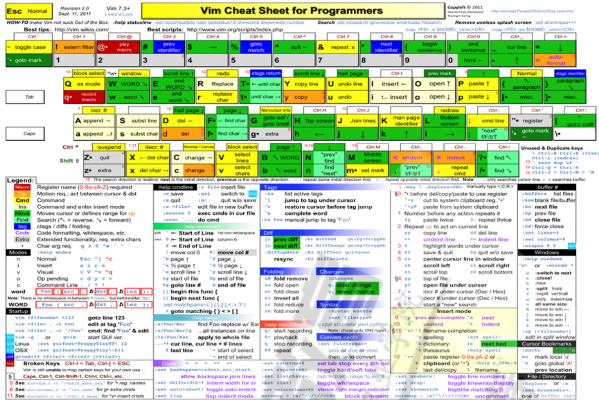
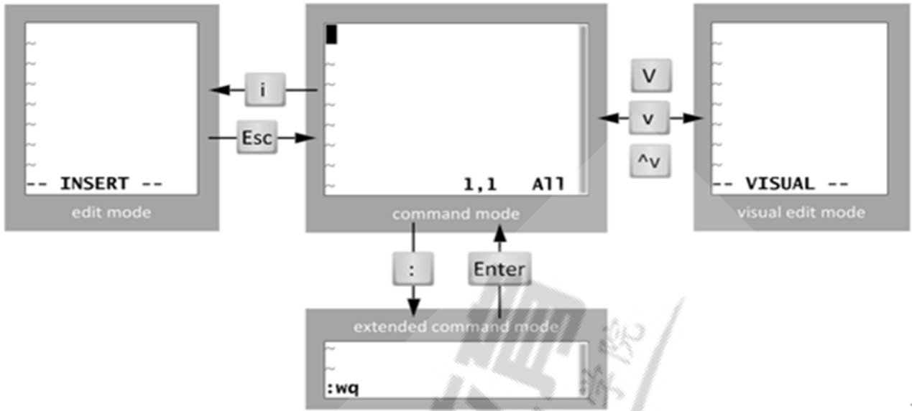
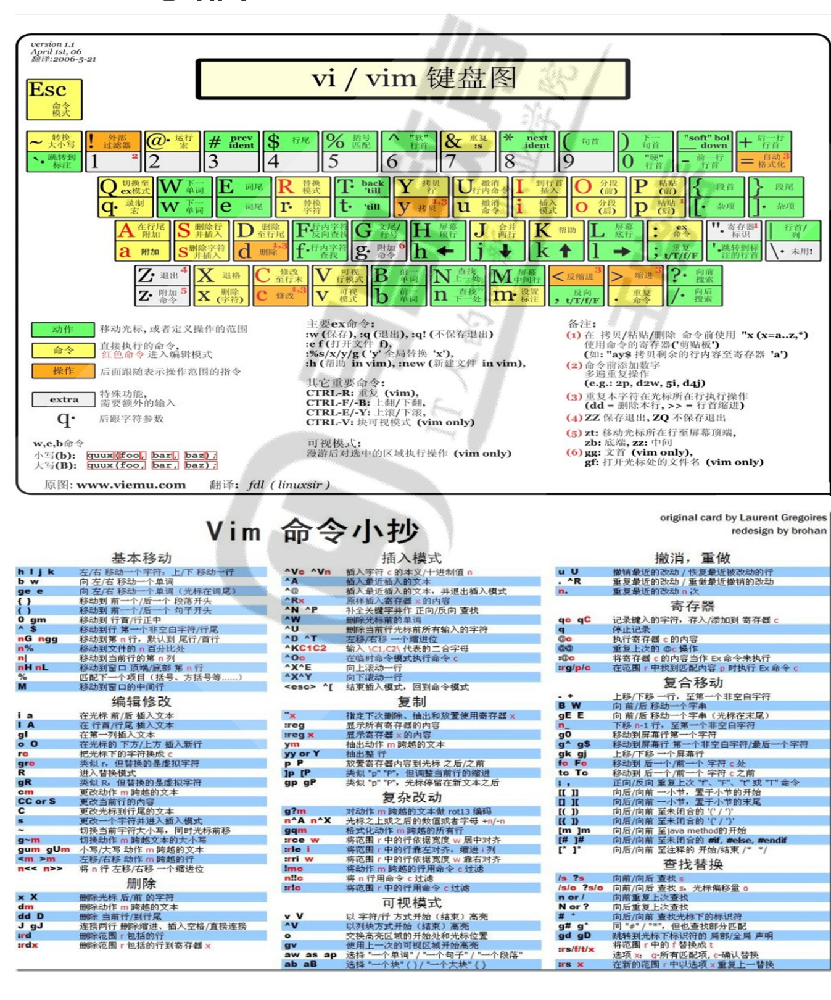
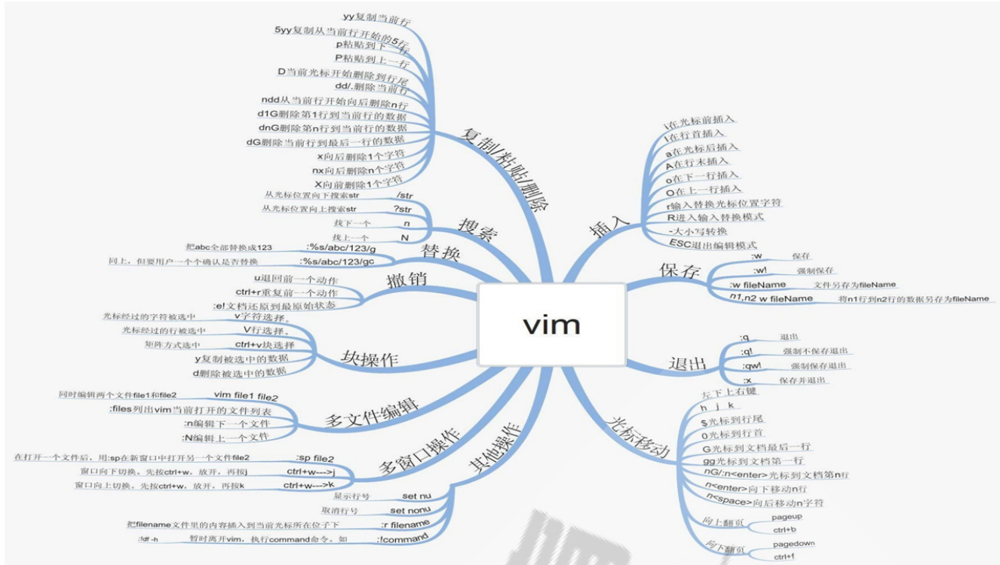
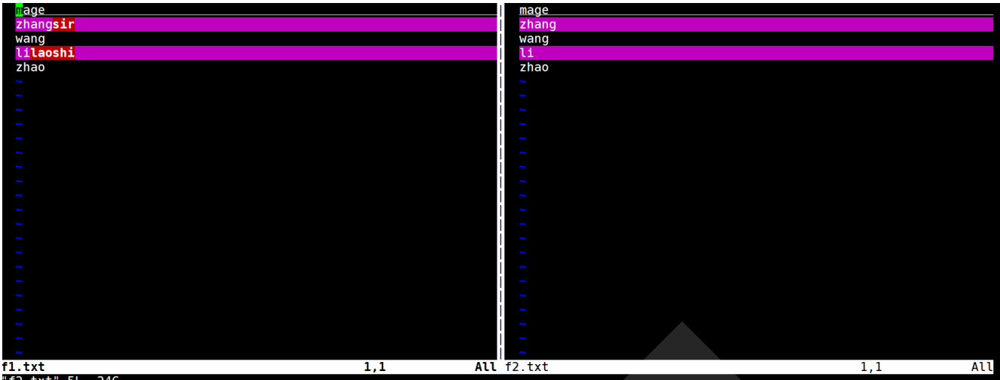
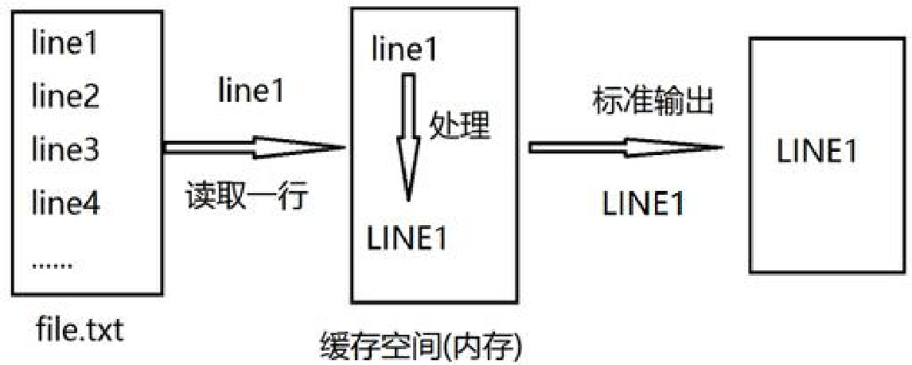
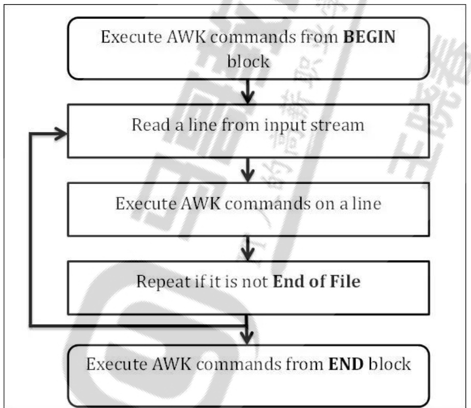

| # | Title |
|---|---|
| 1 | 文本编辑工具之神VIM |
| 1.1 | vi和vim简介 |
| 1.2 | 使用 vim 初步 |
| 1.2.1 | vim 命令格式 |
| 1.2.2 | 三种主要模式和转换 |
| 1.3 | 扩展命令模式 |
| 1.3.1 | 扩展命令模式基本命令 |
| 1.3.2 | 地址定界 |
| 1.3.2.1 | 地址定界格式 |
| 1.3.2.2 | 地址定界后跟一个编辑命令 |
| 1.3.3 | 查找并替换 |
| 1.3.4 | 定制vim的工作特性 |
| 1.3.4.1 | 行号 |
| 1.3.4.2 | 忽略字符的大小写 |
| 1.3.4.3 | 自动缩进 |
| 1.3.4.4 | 复制保留格式 |
| 1.3.4.5 | 显示Tab ^I和换行符 和\$显示 |
| 1.3.4.6 | 高亮搜索 |
| 1.3.4.7 | 语法高亮 |
| 1.3.4.8 | 文件格式 |
| 1.3.4.9 | Tab 用空格代替 |
| 1.3.4.10 | Tab用指定空格的个数代替 |
| 1.3.4.11 | 设置缩进宽度 |
| 1.3.4.12 | 设置文本宽度 |
| 1.3.4.13 | 设置光标所在行的标识线 |
| 1.3.4.14 | 加密 |
| 1.3.4.15 | 了解更多 |
| 1.4 | 命令模式 |
| 1.4.1 | 退出VIM |
| 1.4.2 | 光标跳转 |
| 1.4.3 | 字符编辑 |
| 1.4.4 | 替换命令(replace) |
| 1.4.5 | 删除命令(delete) |
| 1.4.6 | 复制命令(yank) |
| 1.4.7 | 粘贴命令(paste) |
| 1.4.8 | 改变命令(change) |
| 1.4.9 | 查找 |
| 1.4.10 | 撤消更改 |
| 1.4.10 | 高级用法 |
| 1.5 | 可视化模式 |
| 1.6 | 多文件模式 |
| 1.7 | 多窗口模式 |
| 1.7.1 | 多文件分割 |
| 1.7.2 | 单文件窗口分割 |
| 1.8 | vim的寄存器 |
| 1.9 | 标记和宏(macro) |
| 1.10 | 编辑二进制文件 |
| 1.11 | 帮助 |
| 1.12 | vim 总结图 |
| 2 | 文本常见处理工具 |
| 2.1 | 文件内容查看命令 |
| 2.1.1 | 查看文本文件内容 |
| 2.1.1.1 | cat |
| 2.1.1.2 | nl |
| 2.1.1.3 | tac |
| 2.1.1.4 | rev |
| 2.1.2 | 查看非文本文件内容 |
| 2.1.2.1 | hexdump |
| 2.1.2.2 | od |
| 2.1.2.3 | xxd |
| 2.2 | 分页查看文件内容 |
| 2.2.1 | more |
| 2.2.2 | less |
| 2.3 | 显示文本前或后行内容 |
| 2.3.1 | head |
| 2.3.2 | tail |
| 2.3.3 | head 和 tail 总结 |
| 2.4 | 按列抽取文本cut |
| 2.5 | 合并多个文件 paste |
| 2.6 | 分析文本的工具 |
| 2.6.1 | 收集文本统计数据 |
| 2.6.2 | 文本排序 sort |
| 2.6.3 | 去重uniq |
| 2.6.4 | 比较文件 |
| 2.6.4.1 | diff |
| 2.6.4.2 | patch |
| 2.6.4.3 | vimdiff |
| 2.6.4.4 | cmp |
| 3 | 正则表达式 |
| 3.1 | 基本正则表达式元字符 |
| 3.1.1 | 字符匹配 |
| 3.1.2 | 匹配次数 |
| 3.1.3 | 位置锚定 |
| 3.1.4 | 分组其它 |
| 3.1.4.1 | 分组 |
| 3.1.4.2 | 或者 |
| 3.2 | 扩展正则表达式元字符 |
| 3.2.1 | 字符匹配 |
| 3.2.2 | 次数匹配 |
| 3.2.3 | 位置锚定 |
| 3.2.4 | 分组其它 |
| 4 | 文本处理三剑客 |
| 4.1 | 文本处理三剑客之 grep |
| 4.2 | 文本处理三剑客之 sed |
| 4.2.1 | sed 工作原理 |
| 4.2.2 | sed 基本用法 |
| 4.2.3 | sed 高级用法 |
| 4.3 | 文本处理三剑客之 awk |
| 4.3.1 | awk 工作原理和基本用法说明 |
| 4.3.2 | 动作 print |
| 4.3.3 | awk 变量 |
| 4.3.3.1 | 常见的内置变量 |
| 4.3.3.2 | 自定义变量 |
| 4.3.4 | 动作 printf |
| 4.3.5 | 操作符 |
| 4.3.6 | 模式 PATTERN |
| 4.3.7 | 条件判断 if-else |
| 4.3.8 | 条件判断 switch |
| 4.3.9 | 循环 while |
| 4.3.10 | 循环 do-while |
| 4.3.11 | 循环 for |
| 4.3.12 | continue 和 break |
| 4.3.13 | next |
| 4.3.14 | 数组 |
| 4.3.15 | awk 函数 |
| 4.3.15.1 | 常见内置函数 |
| 4.3.15.2 | 自定义函数 |
| 4.3.16 | awk 脚本 |
文本处理工具和正则表达式¶
内容概述¶
文本编辑工具VIM 各种文本工具 基本正则表达式和扩展正则表达式 文本处理三剑客之grep 文本处理三剑客之sed 文本处理三剑客之awk
1 文本编辑工具之神VIM¶
1.1 vi和vim简介¶
theeditor¶
在Linux中我们经常编辑修改文本文件，即由ASCII, Unicode 或其它编码的纯文字的文件。之前介绍过nano，实际工作中我们会使用更为专业，功能强大的工具
文本编辑种类：
全屏编辑器：nano（字符工具）, gedit(图形化工具)，vi,vim行编辑器：sed
vi¶
Visual editor，文本编辑器，是 Linux 必备工具之一，功能强大，学习曲线较陡峭，学习难度大
vim¶
VIsual editor iMproved ，和 vi 使用方法一致，但功能更为强大，不是必备软件
官网：www.vim.org
其他相关编辑器：gvim 一个Vim编辑器的图形版本¶
vim 小抄¶

参考链接¶
https://www.w3cschool.cn/vim/
1.2 使用 vim 初步¶
1.2.1 vim 命令格式¶
vim [OPTION]... FILE..
常用选项¶
+# 打开文件后，让光标处于第#行的行首， $^+$ 默认行尾 $^+$ /PATTERN 让光标处于第一个被PATTERN匹配到的行行首 -b file 二进制方式打开文件 -d file1 file2… 比较多个文件，相当于 vimdiff -m file 只读打开文件 -e file 直接进入ex模式，相当于执行ex file -y file Easy mode (like "evim", modeless)，直接可以操作文件，ctrl $+0$ :wq|q! 保存和不 保存退出
说明：
如果该文件存在，文件被打开并显示内容如果该文件不存在，当编辑后第一次存盘时创建它
1.2.2 三种主要模式和转换¶
vim 是 一个模式编辑器，击键行为是依赖于 vim的 的“模式”
三种常见模式：¶
命令或普通(Normal)模式：默认模式，可以实现移动光标，剪切/粘贴文本插入(Insert)或编辑模式：用于修改文本扩展命令(extended command )或命令(末)行模式：保存，退出等
模式转换¶

命令模式 $\phantom{0}{--}>$ 插入模式i insert, 在光标所在处输入I 在当前光标所在行的行首输入a append, 在光标所在处后面输入A 在当前光标所在行的行尾输入o 在当前光标所在行的下方打开一个新行O 在当前光标所在行的上方打开一个新行插入模式 --- ESC----- $.>$ 命令模式命令模式 ---- : ----> 扩展命令模式扩展命令模式 ----ESC,enter----> 命令模式
范例: 插入颜色字符¶
1 切换至插入模式 2 按ctrl $+{\mathsf{v}}+{\mathsf{\Gamma}}$ [ 三个键,显示^[ 3 后续输入颜色信息,如:[[32mhello[[0m 4 切换至扩展命令模式,保存退出 5 cat 文件可以看到下面显示
[[1; 31mHello vim [[0m ^[[1; 32mGreen ^[[0m
1.3 扩展命令模式¶
按“:”进入Ex模式 ，创建一个命令提示符: 处于底部的屏幕左侧
1.3.1 扩展命令模式基本命令¶
1.3.2 地址定界¶
格式：
:start_pos,end_pos CMD
1.3.2.1 地址定界格式¶
#具体第#行，例如2表示第2行¶
,# #从左侧#表示起始行，到右侧#表示结尾行¶
,+# #从左侧#表示的起始行，加上右侧#表示的行数，范例：2, $+3$ 表示2到5行¶
. #当前行 \$ #最后一行 $\textstyle\mathbf{\dots},\$3$ #当前行到倒数第二行 % #全文, 相当于1,\$
/pattern/ #从当前行向下查找，直到匹配pattern的第一行,即:正则表达式/pat1/,/pat2/ #从第一次被pat1模式匹配到的行开始，一直到第一次被pat2匹配到的行结束#,/pat/ #从指定行开始，一直找到第一个匹配pattern的行结束/pat/,\$ #向下找到第一个匹配patttern的行到整个文件的结尾的所有行
1.3.2.2 地址定界后跟一个编辑命令¶
1.3.3 查找并替换¶
格式
s/要查找的内容/替换为的内容/修饰符
说明：¶
要查找的内容：可使用基本正则表达式模式 替换为的内容：不能使用模式，但可以使用\1, \2, ...等后向引用符号；还可以使用“&”引用前面查找时查 找到的整个内容
修饰符：¶
i #忽略大小写 g #全局替换，默认情况下，每一行只替换第一次出现 gc #全局替换，每次替换前询问
查找替换中的分隔符/可替换为其它字符，如：#,@
范例：
s@/etc@/var@g s#/boot#/#i
1.3.4 定制vim的工作特性¶
扩展命令模式的配置只是对当前vim进程有效，可将配置存放在文件中持久保存配置文件：
/etc/vimrc #全局~/.vimrc #个人
1.3.4.1 行号¶
显示：set number，简写 set nu 取消显示：set nonumber, 简写 set nonu
1.3.4.2 忽略字符的大小写¶
启用：set ignorecase，简写 set ic 不忽略：set noic
1.3.4.3 自动缩进¶
启用：set autoindent，简写 set ai 禁用：set noai
1.3.4.4 复制保留格式¶
启用：set paste 禁用：set nopaste
1.3.4.5 显示Tab ^I和换行符 和\$显示¶
启用：set list 禁用：set nolist
1.3.4.6 高亮搜索¶
启用：set hlsearch 禁用：set nohlsearch 简写：nohl
1.3.4.7 语法高亮¶
启用：syntax on 禁用：syntax off
1.3.4.8 文件格式¶
启用windows格式：set fileformat $\cdot$ dos 启用unix格式：set fileformat=unix 简写 set ff $\dot{\mathbf{\eta}}=\mathbf{\eta}$ dos|unix
1.3.4.9 Tab 用空格代替¶
启用：set expandtab 默认为8个空格代替Tab 禁用：set noexpandtab 简写：set et
1.3.4.10 Tab用指定空格的个数代替¶
启用：set tabstop $\cdot$ 指定#个空格代替Tab简写：set ts $^{=4}$
1.3.4.11 设置缩进宽度¶
向右缩进 命令模式 $\cdot$ #向左缩进 命令模式 $\cdot$ #设置缩进为4个字符set shiftwidth $\cdot$¶
1.3.4.12 设置文本宽度¶
set textwidth $\cdot$ (vim only) #从左向右计数set wrapmargi $_{1=15}$ #从右到左计数
1.3.4.13 设置光标所在行的标识线¶
启用：set cursorline，简写 set cul 禁用：set nocursorline
1.3.4.14 加密¶
启用： set key $\cdot$ password 禁用： set key=
1.3.4.15 了解更多¶
set 帮助
:help option-list :set or :set all
1.4 命令模式¶
命令模式，又称为Normal模式，功能强大，只是此模式输入指令并在屏幕上显示，所以需要记忆大量的快捷按键才能更好的使用
1.4.1 退出VIM¶
ZZ 保存退出ZQ 不保存退出
1.4.2 光标跳转¶
字符间跳转：¶
h: 左 L: 右 j: 下 k: 上
COMMAND：跳转由#指定的个数的字符¶
单词间跳转：¶
w：下一个单词的词首 e：当前或下一单词的词尾 b：当前或前一个单词的词首
COMMAND：由#指定一次跳转的单词数¶
当前页跳转：¶
H：页首 M：页中间行 L：页底 zt：将光标所在当前行移到屏幕顶端zz：将光标所在当前行移到屏幕中间zb：将光标所在当前行移到屏幕底端
行首行尾跳转：¶
^ 跳转至行首的第一个非空白字符 0 跳转至行首 \$ 跳转至行尾
行间移动：¶
G 或者扩展命令模式下:# 跳转至由第#行G 最后一行1G, gg 第一行¶
句间移动：¶
下一句( 上一句
段落间移动：¶
} 下一段{ 上一段
命令模式翻屏操作¶
Ctrl $+\mathsf{f}$ 向文件尾部翻一屏,相当于PagedownCtrl $\cdot$ 向文件首部翻一屏,相当于PageupCtrl $+{\mathsf{d}}$ 向文件尾部翻半屏 Ctrl $\cdot$ 向文件首部翻半屏
1.4.3 字符编辑¶
x 剪切光标处的字符
x 剪切光标处起始的#个字符¶
xp 交换光标所在处的字符及其后面字符的位置 ~ 转换大小写 J 删除当前行后的换行符
1.4.4 替换命令(replace)¶
只替换光标所在处的一个字符R 切换成REPLACE模式（在末行出现-- REPLACE -- 提示）,按ESC回到命令模式
1.4.5 删除命令(delete)¶
d 删除命令，可结合光标跳转字符，实现范围删 d\$ 删除到行尾 d^ 删除到非空行首 d0 删除到行首 dw de db
COMMAND¶
dd： 剪切光标所在的行
dd 多行删除¶
D：从当前光标位置一直删除到行尾，等同于d\$
1.4.6 复制命令(yank)¶
y 复制，行为相似于d命令 y\$y0y^yeyw yb
COMMAND¶
yy：复制行
yy 复制多行¶
Y：复制整行
1.4.7 粘贴命令(paste)¶
p 缓冲区存的如果为整行，则粘贴当前光标所在行的下方；否则，则粘贴至当前光标所在处的后面P 缓冲区存的如果为整行，则粘贴当前光标所在行的上方；否则，则粘贴至当前光标所在处的前面
1.4.8 改变命令(change)¶
命令 c 删除后切换成插入模式
c\$ c^ c0 cb ce cw
COMMAND¶
cc #删除当前行并输入新内容，相当于S
cc¶
C #删除当前光标到行尾，并切换成插入模式,相当于c\$
命令模式操作文本总结¶
1.4.9 查找¶
/PATTERN：从当前光标所在处向文件尾部查找?PATTERN：从当前光标所在处向文件首部查找n：与命令同方向 N：与命令反方向
1.4.10 撤消更改¶
u 撤销最近的更改，相当于windows中ctrl+z
u 撤销之前多次更改¶
U 撤消光标落在这行后所有此行的更改 Ctrl-r 重做最后的“撤消”更改，相当于windows中crtl+y重复前一个操作
. 重复前一个操作#次¶
1.4.10 高级用法¶
范例：
0y\$ 命令 $\mathrm{0.~}$ 先到行头 $\boldsymbol{\mathsf{y}} \boldsymbol{\mathsf{\to}} \boldsymbol{\mathsf{\Lambda}}$ 从这里开始拷贝 $\cdot$ 拷贝到本行最后一个字符
范例：粘贴“wang”100次
100iwang [ESC]¶
di" 光标在” “之间，则删除” “之间的内容yi( 光标在()之间，则复制()之间的内容vi[ 光标在[]之间，则选中[]之间的内容dtx 删除字符直到遇见光标之后的第一个 $\cdot$ 字符ytx 复制字符直到遇见光标之后的第一个 $\times$ 字符
1.5 可视化模式¶
在末行有”-- VISUAL -- “指示，表示在可视化模式
允许选择的文本块
v 面向字符，-- VISUAL --V 面向整行，-- VISUAL LINE --ctrl-v 面向块，-- VISUAL BLOCK --可视化键可用于与移动键结合使用
w ) } 箭头等突出显示的文字可被删除，复制，变更，过滤，搜索，替换等范例：在文件指定行的行首插入#
1、先将光标移动到指定的第一行的行首 2、输入ctrl $+\upnu$ 进入可视化模式 3、向下移动光标，选中希望操作的每一行的第一个字符 4、输入大写字母 I 切换至插入模式 5、输入 # 6、按 ESC 键
范例：在指定的块位置插入相同的内容¶
1、光标定位到要操作的地方 2、 $C T R L+V$ 进入“可视 块”模式，选取这一列操作多少行 3、SHIFT $^{+}$ i(I) 4、输入要插入的内容 5、按 ESC 键
1.6 多文件模式¶
vim FILE1 FILE2 FILE3 :next 下一个 :prev 前一个 :first 第一个 :last 最后一个 :wall 保存所有 :qall 不保存退出所有 :wqall保存退出所有
1.7 多窗口模式¶
1.7.1 多文件分割¶
vim -o|-O FILE1 FILE2-o: 水平或上下分割-O: 垂直或左右分割（vim only）在窗口间切换：Ctrl $+w$ , Arrow
1.7.2 单文件窗口分割¶
Ctrl $+w$ ,s：split, 水平分割，上下分屏 Ctrl $\cdot$ ,v：vertical, 垂直分割，左右分屏 ctrl $+w$ ,q：取消相邻窗口 ctrl $+w$ ,o：取消全部窗口 :wqall 退出
1.8 vim的寄存器¶
有26个命名寄存器和1个无命名寄存器，常存放不同的剪贴版内容，可以在同一个主机的不同会话（终 端窗口）间共享 寄存器名称a，b,…,z,格式：”寄存器 放在数字和命令之间
范例：
3"tyy 表示复制3行到t寄存器中 ，末行显示`3 lines yanked into "t"tp 表示将t寄存器内容粘贴
未指定，将使用无命名寄存器
有10个数字寄存器，用0，1，…，9表示，0存放最近复制内容，1存放最近删除内容。当新的文本变更和删除时，1转存到2，2转存到3，以此类推。数字寄存器不能在不同会话间共享
1.9 标记和宏(macro)¶
ma 将当前位置标记为a，26个字母均可做标记， mb 、 mc 等等
'a 跳转到a标记的位置，实用的文档内标记方法，文档中跳跃编辑时很有用
qa 录制宏 a，a为宏的名称，末行提示： recording @a
q 停止录制宏 $@\mathsf{a}$ 执行宏 a $@{\textcircled{\circ}}$ 重新执行上次执行的宏
1.10 编辑二进制文件¶
以二进制方式打开文件¶
vim -b binaryfile
扩展命令模式下，利用xxd命令转换为可读的十六进制¶
:%!xxd
切换至插入模式下，编辑二进制文件¶
切换至扩展命令模式下，利用xxd命令转换回二进制¶
:%!xxd -r
保存退出¶
练习¶
1、在vim中设置tab缩进为4个字符 2、复制/etc/rc.d/init.d/functions文件至/tmp目录，替换/tmp/functions文件中的/etc/sysconfig/init 为/var/log 3、删除/tmp/functions文件中所有以#开头，且#后面至少有一个空白字符的行的行首的#号
1.11 帮助¶
:help :help topic Use :q to exit help
vimtutor
1.12 vim 总结图¶


2 文本常见处理工具¶
2.1 文件内容查看命令¶
2.1.1 查看文本文件内容¶
2.1.1.1 cat¶
cat 可以查看文本内容格式：
cat [OPTION]... [FILE]...
常见选项
-E：显示行结束符\$
-A：显示所有控制符
-n：对显示出的每一行进行编号
-b：非空行编号
-s：压缩连续的空行成一行
范例：
[root@centos8 \~]#cat -A /data/fa.txt
a b\$
c \$
d^Ib^Ic\$
[root@centos8 \~]#cat /data/fa.txt
a b
c
d b c
[root@centos8 \~]#cat /data/fb.txt
a
b
c
$ cat -b WillFinish.txt # 这里发现空行不显示编号
1 test
2 test
3 test
4 test
5 test
6 test
$ cat -n WillFinish.txt # -n 参数空行也会单独占用一行
1 test
2 test
3
4
5
6
7 test
8 test
9 test
10 test
[root@centos8 \~]# hexdump -C /data/fb.txt # 查看分析二进制文件或未知格式的文件
00000000 61 0d 0a 62 0d 0a 63 0d 0a |a..b..c..|
00000009
[root@centos8 \~]# cat -A /data/fb.txt
a^M\$
b^M\$
c^M\$
[root@centos8 \~]# file /data/fb.txt
/data/fb.txt: ASCII text, with CRLF line terminators
2.1.1.2 nl (显示行号，相当于cat -b)¶
2.1.1.3 tac 逆向显示文本内容¶
root@k3s-master:/home/ubuntu# cat demo.txt
1
2
3
4
5
6
root@k3s-master:/home/ubuntu# tac demo.txt
6
5
4
3
2
1
root@k3s-master:/home/ubuntu# tac
a
b
c # ctrl + d 退出
2.1.1.4 rev 将同一行的内容逆向显示¶
案例
root@k3s-master:/home/ubuntu# cat demo.txt
123456789
abcdefg
root@k3s-master:/home/ubuntu# tac demo.txt
abcdefg
123456789
root@k3s-master:/home/ubuntu# rev demo.txt
987654321
gfedcba
$ rev
abcdefg
gfedcba
$ echo {1..10}
1 2 3 4 5 6 7 8 9 10
$ echo {1..10} |rev
01 9 8 7 6 5 4 3 2 1
2.1.2 查看非文本文件内容¶
2.1.2.1 hexdump¶
范例：
root@k3s-master:~# hexdump -C -n 512 /dev/vda
00000000 eb 63 90 00 00 00 00 00 00 00 00 00 00 00 00 00 |.c..............|
00000010 00 00 00 00 00 00 00 00 00 00 00 00 00 00 00 00 |................|
*
00000050 00 00 00 00 00 00 00 00 00 00 00 80 00 08 00 00 |................|
00000060 00 00 00 00 ff fa 90 90 f6 c2 80 74 05 f6 c2 70 |...........t...p|
00000070 74 02 b2 80 ea 79 7c 00 00 31 c0 8e d8 8e d0 bc |t....y|..1......|
00000080 00 20 fb a0 64 7c 3c ff 74 02 88 c2 52 bb 17 04 |. ..d|<.t...R...|
00000090 f6 07 03 74 06 be 88 7d e8 17 01 be 05 7c b4 41 |...t...}.....|.A|
000000a0 bb aa 55 cd 13 5a 52 72 3d 81 fb 55 aa 75 37 83 |..U..ZRr=..U.u7.|
000000b0 e1 01 74 32 31 c0 89 44 04 40 88 44 ff 89 44 02 |..t21..D.@.D..D.|
000000c0 c7 04 10 00 66 8b 1e 5c 7c 66 89 5c 08 66 8b 1e |....f..\|f.\.f..|
000000d0 60 7c 66 89 5c 0c c7 44 06 00 70 b4 42 cd 13 72 |`|f.\..D..p.B..r|
000000e0 05 bb 00 70 eb 76 b4 08 cd 13 73 0d 5a 84 d2 0f |...p.v....s.Z...|
000000f0 83 d0 00 be 93 7d e9 82 00 66 0f b6 c6 88 64 ff |.....}...f....d.|
00000100 40 66 89 44 04 0f b6 d1 c1 e2 02 88 e8 88 f4 40 |@f.D...........@|
00000110 89 44 08 0f b6 c2 c0 e8 02 66 89 04 66 a1 60 7c |.D.......f..f.`||
00000120 66 09 c0 75 4e 66 a1 5c 7c 66 31 d2 66 f7 34 88 |f..uNf.\|f1.f.4.|
00000130 d1 31 d2 66 f7 74 04 3b 44 08 7d 37 fe c1 88 c5 |.1.f.t.;D.}7....|
00000140 30 c0 c1 e8 02 08 c1 88 d0 5a 88 c6 bb 00 70 8e |0........Z....p.|
00000150 c3 31 db b8 01 02 cd 13 72 1e 8c c3 60 1e b9 00 |.1......r...`...|
00000160 01 8e db 31 f6 bf 00 80 8e c6 fc f3 a5 1f 61 ff |...1..........a.|
00000170 26 5a 7c be 8e 7d eb 03 be 9d 7d e8 34 00 be a2 |&Z|..}....}.4...|
00000180 7d e8 2e 00 cd 18 eb fe 47 52 55 42 20 00 47 65 |}.......GRUB .Ge|
00000190 6f 6d 00 48 61 72 64 20 44 69 73 6b 00 52 65 61 |om.Hard Disk.Rea|
000001a0 64 00 20 45 72 72 6f 72 0d 0a 00 bb 01 00 b4 0e |d. Error........|
000001b0 cd 10 ac 3c 00 75 f4 c3 00 00 00 00 00 00 00 00 |...<.u..........|
000001c0 02 00 ee ff ff ff 01 00 00 00 ff ff 7f 07 00 00 |................|
000001d0 00 00 00 00 00 00 00 00 00 00 00 00 00 00 00 00 |................|
*
000001f0 00 00 00 00 00 00 00 00 00 00 00 00 00 00 55 aa |..............U.|
00000200
2.1.2.2 od¶
od 即 dump files in octal and other formats
范例：
[root@centos8 \~]#echo {a..z} | tr -d ' '|od -t x
0000000 64636261 68676665 6c6b6a69 706f6e6d
0000020 74737271 78777675 000a7a79
0000033
[root@centos8 \~]#echo {a..z} tr -d |od -t x1
0000000 61 62 63 64 65 66 67 68 69 6a 6b 6c 6d 6e 6f 70
0000020 71 72 73 74 75 76 77 78 79 7a 0a
0000033
[root@centos8 \~]#echo {a..z} tr -d |od -t x1z
0000000 61 62 63 64 65 66 67 68 69 6a 6b 6c 6d 6e 6f 70 $>$ abcdefghijklmnop<
0000020 71 72 73 74 75 76 77 78 79 7a 0a >qrstuvwxyz.<
0000033
2.1.2.3 xxd¶
[root@centos8 \~]#echo {a..z} | tr -d ' '|xxd 00000000: 6162 6364 6566 6768 696a 6b6c 6d6e 6f70 abcdefghijklmnop 00000010: 7172 7374 7576 7778 797a 0a qrstuvwxyz.
2.2 分页查看文件内容¶
2.2.1 more¶
可以实现分页查看文件，可以配合管道实现输出信息的分页格式
more [OPTIONS...] FILE..
选项：
-d: 显示翻页及退出提示
2.2.2 less¶
less 也可以实现分页查看文件或STDIN输出，less 命令是man命令使用的分页器查看时有用的命令包括：
/文本 搜索 文本n/N 跳到下一个 或 上一个匹配
范例：
[root@centos8 \~]# cat /etc/init.d/functions |less
# -\*-Shell-script-\*-
#
# functions This file contains functions to be used by most or all # shell scripts in the /etc/init.d directory.
#
TEXTDOMAIN=initscripts # Make sure umask is sane umask 022
# Set up a default search path.
PATH="/sbin:/usr/sbin:/bin:/usr/bin"
export PATH ..省略...
2.3 显示文本前或后行内容¶
2.3.1 head¶
可以显示文件或标准输入的前面行格式：
head [OPTION]... [FILE]..
选项：
-c # 指定获取前#字节 -n # 指定获取前#行,#如果为负数,表示从文件头取到倒数第#前 -# 同上
范例：
[root@centos8 \~]# head -n 3 /etc/passwd root:x:0:0:root:/root:/bin/bash bin:x:1:1:bin:/bin:/sbin/nologin daemon:x:2:2:daemon:/sbin:/sbin/nologin [root@centos8 \~]#head -3 /etc/passwd root:x:0:0:root:/root:/bin/bash bin:x:1:1:bin:/bin:/sbin/nologin daemon:x:2:2:daemon:/sbin:/sbin/nologin [root@centos8 \~]#echo a我b | head -c4 a我[root@centos8 \~]#
[root@centos8 \~]#cat /dev/urandom | tr -dc '[:alnum:]'| head -c10
G755MlZatW[root@centos8 \~]#cat /dev/urandom | tr -dc '[:alnum:]'| head -c10 ASsax6DeBz[root@centos8 \~]#cat /dev/urandom | tr -dc '[:alnum:]'| head -c10 | tee pass.txt | passwd --stdin mage
Changing password for user mage.
passwd: all authentication tokens updated successfully.
[root@centos8 \~]#cat pass.txt
AGT952Essg[root@centos8 \~]#su - wang
[wang@centos8 \~]\$su - mage
Password:
[root@centos8 \~]#cat seq.log
1
2
3
4
5
6
7
8
9
10
[root@centos8 \~]# head -n 3 seq.log
1
2
3
[root@centos8 \~]# head -n -3 seq.log
1
2
3
4
5
6
7
[root@centos8 \~]# head -n $+3$ seq.log
1
2
3
2.3.2 tail¶
tail 和head 相反，查看文件或标准输入的倒数行格式：
tail [OPTION]... [FILE]...
常用选项：
-c # 指定获取后#字节 -n # 指定获取后#行,如果#是负数,表示从第#行开始到文件结束 -# 同上 -f 跟踪显示文件fd新追加的内容,常用日志监控，相当于 --follow=descriptor,当文件删除再新 建同名文件,将无法继续跟踪文件 -F 跟踪文件名，相当于--follow=name --retry，当文件删除再新建同名文件,将可以继续跟踪文 件 tailf 类似 tail –f，当文件不增长时并不访问文件,节约资源,CentOS8无此工具
范例：
[root@centos8 \~]#cat /data/f1.txt
1
2
3
4
5
6
7
8
9
10
[root@centos8 \~]#tail -n 3 /data/f1.txt
8
9
10
[root@centos8 \~]#tail -n $+3$ /data/f1.txt
3
4
5
6
7
8
9
10
[root@centos8 \~]#
范例：
[root@centos8 \~]#tail -3 /var/log/messages
Dec 20 09:49:01 centos8 dbus-daemon[952]: [system] Successfully activated service 'net.reactivated.Fprint'
Dec 20 09:49:01 centos8 systemd[1]: Started Fingerprint Authentication Daemon. Dec 20 09:49:13 centos8 su[6887]: (to mage) root on pts/0 [root@centos8 \~]#tail -f /var/log/messages Dec 20 08:36:40 centos8 systemd[1321]: Startup finished in 52ms. Dec 20 08:36:40 centos8 systemd[1]: Started User Manager for UID 0. Dec 20 08:47:01 centos8 systemd[1]: Starting dnf makecache... Dec 20 08:47:02 centos8 dnf[1465]: AppStream
213 kB/s | 4.3 kB 00:00 Dec 20 08:47:02 centos8 dnf[1465]: BaseOS
163 kB/s | 3.9 kB 00:00 Dec 20 08:47:04 centos8 dnf[1465]: EPEL
2.6 kB/s | 5.3 kB 00:02 Dec 20 08:47:09 centos8 dnf[1465]: EPEL
884 kB/s | 4.3 MB 00:05 Dec 20 08:47:12 centos8 dnf[1465]: extras
727 B/s | 1.5 kB 00:02 Dec 20 08:47:12 centos8 dnf[1465]: Metadata cache created. Dec 20 08:47:12 centos8 systemd[1]: Started dnf makecache.
只查看最新发生的日志
[root@centos8 \~]#tail -fn0 /var/log/messages [root@centos8 \~]#tail -0f /var/log/syslog
取IP行
[root@centos8 data]#ifconfig | head -2 | tail -1
inet 10.0.0.8 netmask 255.255.255.0 broadcast 10.0.0.255
2.3.3 head 和 tail 总结¶
范例: 显示第6行
[root@centos8 \~]#seq 20| head -n 6|tail -n1
6
[root@centos8 \~]#seq 20| tail -n +6 |head -n1
6
2.4 按列抽取文本cut¶
cut 命令可以提取文本文件或STDIN数据的指定列格式
cut [OPTION]... [FILE].
常用选项¶
-d DELIMITER: 指明分隔符，默认tab -f FILEDS:#: 第#个字段,例如:3#,#[,#]：离散的多个字段，例如:1,3,6#-#：连续的多个字段, 例如:1-6混合使用：1-3,7 -c 按字符切割 --output-delimiter $\c=$ STRING指定输出分隔符
范例：¶
[root@centos8 \~]#cut -d: -f1,3-4,7 /etc/passwd
[root@centos8 \~]#ifconfig |head -n2 |tail -n1|cut -d" " -f10
10.0.0.8
[root@centos8 \~]#ifconfig |head -n2 |tail -n1|tr -s |cut -d " " -f3
10.0.0.8
[root@centos8 \~]#df | tr -s ' '|cut -d' ' -f5 |tr -dc "[0-9\n]"
0
0
1
0
5
1
15
1
[root@centos8 \~]#df | tr -s ' ' % |cut -d% -f5 |tr -d '[:alpha:]'
0
0
1
0
5
1
15
1
1 010515
[root@centos8 \~]#cut -d: -f1,3,7 --output-delimiter="---" /etc/passwd
root---0---/bin/bash
bin---1---/sbin/nologin
daemon---2---/sbin/nologin
cat /etc/passwd | cut -d: -f7
cut -c2-5 /usr/share/dict/words
[root@centos8 \~]#echo {1..10}| cut -d ' ' -f1-10 --output-delimiter="+" |bc
55
范例: 取分区利用率¶
#取分区利用率
[root@centos8 \~]#df|tr -s ' ' |cut -d' ' -f5 |tr -d %
[root@centos8 \~]#df|tr -s '%'|cut -d% -f5
Use
0
0
2
0
3
1
15
0
100
[root@centos8 \~]#df |cut -c 44-46|tail -n $+2$ 0 0 3 0 3 1 13 0
[root@centos8 \~]#df | tail -n $+2$ |tr -s ' ' % |cut -d% -f5
0
0
1
0
3
1
19
0
100 -d' -f5 |tr -d %
0
0
1
0
3
1
19
0
100
2.5 合并多个文件 paste¶
paste 合并多个文件同行号的列到一行格式
paste [OPTION]... [FILE]..
常用选项：¶
-d #分隔符：指定分隔符，默认用TAB-s #所有行合成一行显示
# 范例：
[root@centos8 \~]#cat alpha.log
a
b
c
d
e
f
g
h
[root@centos8 \~]#cat seq.log
1
2
3
4
5
[root@centos8 \~]#cat alpha.log seq.log
a
b
c
d
e
f
g
h
1
2
3
4
5
[root@centos8 \~]#paste alpha.log seq.log
a 1
b 2
c 3
d 4
e 5
f
g
h
[root@centos8 \~]#paste -d":" alpha.log seq.log
a:1
b:2
c:3
d:4
e:5
f:
g:
h:
[root@centos8 \~]#paste -s seq.log
1 2 3 4 5
[root@centos8 \~]#paste -s alpha.log
a b c d e f g h
[root@centos8 \~]#paste -s alpha.log seq.log
a b c d e f g h
1 2 3 4 5
[root@centos8 \~]#cat title.txt
ceo
coo
cto
[root@centos8 \~]#cat emp.txt
mage
zhang
wang
xu
[root@centos8 \~]#paste title.txt emp.txt
ceo mage
coo zhang
cto wang xu
[root@centos8 \~]#paste -s title.txt emp.txt
ceo coo cto
mage zhang wang xu
a[1234567:rbo:oct:@dc:een:tfo:sg8:h\~:]#is:ejq 10
[root@centos8 \~]#seq 10 |paste -s -d+|bc
55
[root@centos8 \~]#cat user.txt
wang
mage
[root@centos8 \~]#cat pass.txt
123456
magedu
[root@centos8 \~]#paste -d: user.txt pass.txt
wang:123456
mage:magedu
[root@centos8 \~]#paste -d: user.txt pass.txt|chpasswd
2.6 分析文本的工具¶
文本数据统计：wc整理文本：sort比较文件：diff和patch
2.6.1 收集文本统计数据 wc¶
wc 命令可用于统计文件的行总数、单词总数、字节总数和字符总数可以对文件或STDIN中的数据统计
常用选项¶
-l 只计数行数 -w 只计数单词总数 -c 只计数字节总数 -m 只计数字符总数 -L 显示文件中最长行的长度
范例:¶
wc story.txt 39 237 1901 story.txt 行数 单词数 字节数 [root@centos8 ~]#ll title.txt -rw-r--r-- 1 root root 30 Dec 20 11:05 title.txt [root@centos8 ~]#ll title1.txt [c[reotrootmzt老@ah@王cgacenengntos8 ~]#cat title.1t.xttx ceoto mzwahaganengg 3 6 30 title.txt [root@centos8 ~]#wc title1.txt 3 6 28 title1.txt [root@centos8 ~]#wc -l title.txt 3 title.txt [root@centos8 ~]#cat title.txt | wc -l 3 [root@centos8 ~]#df | tail -n \$(echo `df | wc -l`-1|bc) devtmpfs 910220 0 910220 $0\%$ /dev tmpfs 924728 0 924728 $0\%$ /dev/shm tmpfs 924728 9224 915504 $1\%$ /run tmpfs 924728 0 924728 $0\%$ /sys/fs/cgroup /dev/sda2 104806400 4836160 99970240 $5\%$ / /dev/sda3 52403200 398580 52004620 $1\%$ /data /dev/sda1 999320 131764 798744 $15\%$ /boot tmpfs 184944 4 184940 $1\%$ /run/user/0
[root@centos8 ~]#yum -y install words [root@centos8 ~]#wc -l /usr/share/dict/linux.words 479829 /usr/share/dict/linux.words
2.6.2 文本排序 sort¶
把整理过的文本显示在STDOUT，不改变原始文件格式：
sort [options] file(s)
常用选项¶
-r 执行反方向（由上至下）整理 -R 随机排序 -n 执行按数字大小整理 -h 人类可读排序,如: 2K 1G -f 选项忽略（fold）字符串中的字符大小写 -u 选项（独特，unique），合并重复项，即去重 -t c 选项使用c做为字段界定符 -k # 选项按照使用c字符分隔的 # 列来整理能够使用多次
范例:¶
[root@centos8 data]#cut -d: -f1,3 /etc/passwd|sort -t: -k2 -nr |head -n3 nxoibaodmyi:n6g5:5130402 mage:1001
#统计日志访问量¶
[root@centos8 data]#cut -d" " -f1 /var/log/nginx/access_log |sort -u|wc -l 201
范例：统计分区利用率#查看分区利用率最高值
[root@centos8 ~]#df| tr -s '%'|cut -d% -f5|sort -nr|head -1 100 0 0 0 1 1 1 15 5 [root@centos8 ~]#df | tr -s " " %|cut -d% -f5|tr -d '[:alpha:]' | sort -n 0 0 0 1 1 1 5 15 [root@centos8 ~]#df | tr -s " " %|cut -d% -f5|tr -d '[:alpha:]' | sort -n |tail -n1 15 [root@centos8 ~]#df | tr -s " " %|cut -d% -f5|tr -d '[:alpha:]' | sort -nr 15 5 1 1 1 0 0 0 [root@centos8 ~]#df | tr -s " %|cut -d% -f5|tr -d '[:alpha:]' | sort -nr|head -n1 15
面试题：有两个文件，a.txt与b.txt ，合并两个文件，并输出时确保每个数字也唯一
a.txt中的每一个数字在本文件唯¶
200 100 34556 23 ...
b.txt中的每一个数字在本文件唯一¶
123 43 200 3321
就是将两个文件合并后重复的行去除，不保留100¶
345563 123 43 3321
2.6.3 去重uniq¶
uniq命令从输入中删除前后相接的重复的行格式：
uniq [OPTION]... [FILE].
常见选项：
-c: 显示每行重复出现的次数-d: 仅显示重复过的行-u: 仅显示不曾重复的行
uniq常和sort 命令一起配合使用：
范例：
sort userlist.txt uniq -c 范例：统计日志访问量最多的请求
[root@centos8 data]#cut -d" " -f1 access_log |sort |uniq -c|sort -nr |head -3 4870 172.20.116.228 3429 172.20.116.208 2834 172.20.0.222
[root@centos8 data]#lastb -f btmp-34 tr - |cut -d ' ' -f3|sort |uniq -c |sort -nr | head -3 86294 58.218.92.37 43148 58.218.92.26 18036 112.85.42.201
范例：并发连接最多的远程主机IP
[root@centos8 ~]#ss -nt|tail $-n+2$ |tr -s ' ' : |cut -d: -f6|sort|uniq -c|sort - nr |head -n2 7 10.0.0.1 2 10.0.0.7
范例：取两个文件的相同和不同的行
[root@centos8 data]#cat test1.txt a b 1 c [root@centos8 data]#cat test2.txt b e f c 1 2
取文件的共同行¶
[root@centos8 data]#cat test1.txt test2.txt | sort |uniq -d 1 b c
取文件的不同行¶
[root@centos8 data]#cat test1.txt test2.txt | sort |uniq -u 2 a e f
2.6.4 比较文件¶
2.6.4.1 diff¶
diff 命令比较两个文件之间的区别
-u 选项来输出“统一的（unified）”diff格式文件，最适用于补丁文件
范例：¶
[root@centos8 ~]#cat f1.txt mage zhang wang xu [root@centos8 ~]#cat f2.txt magedu zhang sir wang xu shi [root@centos8 ~]#diff f1.txt f2.txt 1,2c1,2 $\prec$ mage $\angle{\mathbf{\xi}}<\mathbf{\zeta}$ zhang $>$ magedu $>$ zhang sir 4a5 $>$ shi [root@centos8 ~]#diff -u f1.txt f2.txt - f1.txt 2019-12-13 21:31:30.892775671 +0800 $^{+++}$ f2.txt 2019-12-13 22:00:14.373677728 +0800 $ @ Q -1,4 +1,5 \textcircled{3}$ @ -mage -zhang +magedu +zhang sir wang xu +shi [root@centos8 ~]#diff -u f1.txt f2.txt > f.patch [root@centos8 ~]#rm -f f2.txt [root@centos8 ~]#patch -b f1.txt f.patch patching file f1.txt [root@centos8 ~]#cat f1.txt magedu zhang sir wang xu shi [root@centos8 ~]#cat f1.txt.orig mage zhang wang xu
2.6.4.2 patch¶
patch 复制在其它文件中进行的改变（要谨慎使用）
-b 选项来自动备份改变了的文件
范例：
diff -u foo.conf foo2.conf $>$ foo.patch patch -b foo.conf foo.patch
2.6.4.3 vimdiff¶
相当于 vim -d
[root@centos8 ~]#cat f1.txt mage zhangsir wang lilaoshi zhao [root@centos8 ~]#cat f2.txt mage zhang wang li zhao [root@centos8 ~]#which vimdiff /usr/bin/vimdiff [root@centos8 ~]#ll /usr/bin/vimdiff lrwxrwxrwx. 1 root root 3 Nov 12 2019 /usr/bin/vimdiff $\mathrel{-}>$ vim
[root@centos8 ~]#vimdiff f1.txt f2.txt

2.6.4.4 cmp¶
范例：查看二进制文件的不同
[root@centos8 data]#ll /usr/bin/dir /usr/bin/ls -rwxr-xr-x. 1 root root 166448 May 12 2019 /usr/bin/dir -rwxr-xr-x. 1 root root 166448 May 12 2019 /usr/bin/ls [root@centos8 data]#ll /usr/bin/dir /usr/bin/ls -i 201839444 -rwxr-xr-x. 1 root root 166448 May 12 2019 /usr/bin/dir 201839465 -rwxr-xr-x. 1 root root 166448 May 12 2019 /usr/bin/ls [root@centos8 data]#diff /usr/bin/dir /usr/bin/ls Binary files /usr/bin/dir and /usr/bin/ls differ
[root@centos8 ~]#cmp /bin/dir /bin/ls /bin/dir /bin/ls differ: byte 737, line 2
#跳过前735个字节,观察后面30个字节¶
[root@centos8 ~]#hexdump -s 735 -Cn 30 /bin/ls 000002df 00 05 6d da 3f 1b 77 91 91 63 a7 de 55 63 a2 b9 |..m.?.w..c..Uc..| 000002ef d9 d2 45 55 4c 00 00 00 00 03 00 00 00 7d |..EUL.. .}| 000002fd [root@centos8 ~]#hexdump s 735 -Cn 30 /bin/dir 000002df 00 f1 21 4e f2 19 7e ef 38 0d 9b 3e d7 54 08 39 |..!N..~.8..>.T.9| 000002ef e4 74 4d 69 25 00 00 00 00 03 00 00 00 7d |.tMi%.. .}| 000002fd
练习¶
1、找出ifconfig “网卡名” 命令结果中本机的IPv4地址 2、查出分区空间使用率的最大百分比值 3、查出用户UID最大值的用户名、UID及shell类型 4、查出/tmp的权限，以数字方式显示 5、统计当前连接本机的每个远程主机IP的连接数，并按从大到小排序
3 正则表达式¶
REGEXP： Regular Expressions，由一类特殊字符及文本字符所编写的模式，其中有些字符（元字符）不表示字符字面意义，而表示控制或通配的功能，类似于增强版的通配符功能，但与通配符不同，通配符功能是用来处理文件名，而正则表达式是处理文本内容中字符
正则表达式被很多程序和开发语言所广泛支持：vim, less,grep,sed,awk, nginx,mysql 等
正则表达式分两类：
基本正则表达式：BRE Basic Regular Expressions扩展正则表达式：ERE Extended Regular Expressions
正则表达式引擎：
采用不同算法，检查处理正则表达式的软件模块，如：PCRE（Perl Compatible RegularExpressions）正则表达式的元字符分类：字符匹配、匹配次数、位置锚定、分组
帮助：man 7 regex
3.1 基本正则表达式元字符¶
3.1.1 字符匹配¶
匹配任意单个字符，可以是一个汉字
[] 匹配指定范围内的任意单个字符，示例：[wang] [0-9] [a-z] [a-zA-Z] [^] 匹配指定范围外的任意单个字符,示例：[^wang] [:alnum:] 字母和数字 [:alpha:] 代表任何英文大小写字符，亦即 A-Z, a-z [:lower:] 小写字母,示例:[[:lower:]],相当于[a-z] [:upper:] 大写字母 [:blank:] 空白字符（空格和制表符） [:space:] 包括空格、制表符(水平和垂直)、换行符、回车符等各种类型的空白,比[:blank:]包含的范围广 [:cntrl:] 不可打印的控制字符（退格、删除、警铃. [:digit:] 十进制数字 [:xdigit:]十六进制数字 [:graph:] 可打印的非空白字符 [:print:] 可打印字符 [:punct:] 标点符号 \w #匹配单词构成部分，等价于[[:alnum:]] \W #匹配非单词构成部分，等价于[^[:alnum:]] \S #匹配任何非空白字符。等价于 [^ \f\n\r\t\v]。 \s #匹配任何空白字符，包括空格、制表符、换页符等等。等价于 [ \f\n\r\t\v]。注意Unicode 正则表达式会匹配全角空格符
范例：¶
[root@centos8 ~]#ls /etc/ | grep 'rc[.0-6]' rc0.d rc1.d rc2.d rc3.d rc4.d rc5.d rc6.d rc.d rc.local [root@centos8 ~]#ls /etc/ | grep 'rc[.0-6].' rc0.d rc1.d rc2.d rc3.d rc4.d rc5.d rc6.d rc.d rc.local [root@centos8 ~]#ls /etc/ | grep 'rc[.0-6].' rc0.d rc1.d rc2.d rc3.d rc45.d rc6.d
3.1.2 匹配次数¶
用在要指定次数的字符后面，用于指定前面的字符要出现的次数
* #匹配前面的字符任意次，包括0次，贪婪模式：尽可能长的匹配 .* #任意长度的任意字符 \? #匹配其前面的字符出现0次或1次,即:可有可无 $\backslash+$ #匹配其前面的字符出现最少1次,即:肯定有且 >=1 次 {n} #匹配前面的字符n次 {m,n} #匹配前面的字符至少m次，至多n次 {,n} #匹配前面的字符至多n次, $<=\mathsf{n}$ {n,} #匹配前面的字符至少n次
范例：
[root@centos8 ~]#echo /etc/ |grep "/etc/\?" /etc/ [root@centos8 ~]#echo /etc |grep "/etc/\?" /etc
范例:
[root@centos8 ~]#cat test.txt google goooooooooooooooooogle ggle gogle gooooOOOOO00000gle gooogle [root@centos8 ~]#grep 'go{2,}gle' test.txt google goooooooooooooooooogle gooogle [root@centos8 ~]#grep 'goo $^+$ gle' test.txt google goooooooooooooooooogle gooogle [root@centos8 ~]#grep 'goo*gle' test.txt google goooooooooooooooooogle gogle gooogle [root@centos8 ~]#grep 'gooo*gle' test.txt google goooooooooooooooooogle gooogle
范例: 匹配正负数
[root@centos8 ~]#echo -1 -2 123 -123 234 |grep '-\?[0-9]+' grep: invalid option -- '\' Usage: grep [OPTION]... PATTERN [FILE]. Try 'grep --help' for more information.
[root@centos8 ~]#echo -1 -2 123 -123 234 |grep '-\?[0-9]+' -1 -2 123 -123 234
[root@centos8 ~]#echo -1 -2 123 -123 234 |grep -E '-?[0-9]+' grep: invalid option -- '?' Usage: grep [OPTION]... PATTERN [FILE]. Try 'grep --help' for more information. [root@centos8 ~]#echo -1 -2 123 -123 234 |grep -E '-?[0-9]+' -1 -2 123 -123 234 [root@centos8 ~]#echo -1 -2 123 -123 234 |grep -E -- '-?[0-9]+ -1 -2 123 -123 234 [root@centos8 ~]#echo -1 -2 123 -123 234 |grep -E '(-)?[0-9]+' -1 -2 123 -123 234 [root@centos8 ~]#echo -1 -2 123 -123 234 |grep -E '-?[0-9]+' grep: invalid option Usage: grep [OPTION]. PATTERN [FILE]. Try 'grep --help' for more information. [root@centos8 ~]#echo -1 -2 123 -123 234 |grep -E '-?[0-9]+ -1 -2 123-123 234 [root@centos8 ~]#echo -1 -2 123 -123 234 |grep -E -- '-?[0-9]+ -1 -2 123 -123 234 [root@centos8 ~]#echo -1 -2 123 -123 234 |grep -E '(-)?[0-9]+' -1 -2 123 -123 234
[root@centos8 ~]#ifconfig eth0
eth0: flag $\mathsf{s}{=}4163{<}\mathsf{U P}$ ,BROADCAST,RUNNING,MULTICAST> mtu 1500 inet 10.0.0.8 netmask 255.255.255.0 broadcast 10.0.0.255 inet6 fe80::20c:29ff:fee1:e53 prefixlen 64 scopeid $0\times20<]$ ink> ether 00:0c:29:e1:0e:53 txqueuelen 1000 (Ethernet) RX packets 45953 bytes 21739254 (20.7 MiB) RX errors 0 dropped 0 overruns 0 frame 0 TX packets 35886 bytes 26575579 (25.3 MiB) TX errors 0 dropped 0 overruns 0 carrier 0 collisions 0 [root@centos8 ~]#ifconfig eth0|grep netmask |grep -o '[0-9]{1,3}.[0-9]\ {1,3}.[0-9]{1,3}.[0-9]{1,3}'|head -n1 10.0.0.8 [root@centos8 ~]#ifconfig eth0|grep -o '[0-9]{1,3}.[0-9]{1,3}.[0-9]\ {1,3}.[0-9]{1,3}'|head -n1 10.0.0.8
3.1.3 位置锚定¶
位置锚定可以用于定位出现的位置
^ #行首锚定, 用于模式的最左侧\$ #行尾锚定，用于模式的最右侧^PATTERN\$ #用于模式匹配整行 ^\$ #空行 ^[[:space:]]*\$ #空白行 $\setminus$ 或 \b #词首锚定，用于单词模式的左侧> 或 \b #词尾锚定，用于单词模式的右侧\<PATTERN> #匹配整个单词
范例:¶
[root@centos8 ~]#grep '[#]' /etc/fstab UUID $\vDash$ acf9bd1f-caae-4e28-87be-e53afec61347 / xfs defaults 0 0 UUID $\vDash$ 1770b87e-db5a-445e-bff1-1653ac64b3d6 /boot ext4 defaults 1 2 UUID $\vDash$ ffffd919-d674-44d9-a4e7-402874f0a1f0 /data xfs defaults 0 0 UUID=409e36d2-ac5e-423f-ad78-9b12db4576bd swap swap defaults 0 0
范例：排除掉空行和#开头的行
[root@centos8 ~]#grep -v '^\$' /etc/profile|grep -v '^#' [root@centos8 ~]#grep '[\$#]' /etc/profile
3.1.4 分组其它¶
3.1.4.1 分组¶
分组：() 将多个字符捆绑在一起，当作一个整体处理，如：(root)+
后向引用：分组括号中的模式匹配到的内容会被正则表达式引擎记录于内部的变量中，这些变量的命名方式为: \1, \2, \3, ...
\1 表示从左侧起第一个左括号以及与之匹配右括号之间的模式所匹配到的字符
示例：
(string1(string2))\1 ：string1(string2)\2 ：string2
注意：后向引用引用前面的分组括号中的模式所匹配字符，而非模式本身
3.1.4.2 或者¶
或者：|示例：
a|b #a或bC|cat #C或cat(C|c)at #Cat或cat范例：排除空行和#开头的行
[root@centos6 ~]#grep -v '^#' /etc/httpd/conf/httpd.conf |grep -v ^\$ [root@centos6 ~]#grep -v '#|\$' /etc/httpd/conf/httpd.conf [root@centos6 ~]#grep -v '^(#|\$)' /etc/httpd/conf/httpd.conf [root@centos6 ~]#grep "[#]" /etc/httpd/conf/httpd.conf
正则表达式练习¶
1、显示/proc/meminfo文件中以大小s开头的行(要求：使用两种方法) 2、显示/etc/passwd文件中不以/bin/bash结尾的行 3、显示用户rpc默认的shell程序 4、找出/etc/passwd中的两位或三位数 5、显示CentOS7的/etc/grub2.cfg文件中，至少以一个空白字符开头的且后面有非空白字符的行 6、找出“netstat -tan”命令结果中以LISTEN后跟任意多个空白字符结尾的行 7、显示CentOS7上所有UID小于1000以内的用户名和UID 8、添加用户bash、testbash、basher、sh、nologin(其shell为/sbin/nologin),找出/etc/passwd用户 名和shell同名的行 9、利用df和grep，取出磁盘各分区利用率，并从大到小排序
3.2 扩展正则表达式元字符¶
3.2.1 字符匹配¶
. 任意单个字符¶
[wang] 指定范围的字符 [^wang] 不在指定范围的字符 [:alnum:] 字母和数字 [:alpha:] 代表任何英文大小写字符，亦即 A-Z, a-z [:lower:] 小写字母,示例:[[:lower:]],相当于[a-z] [:upper:] 大写字母 [:blank:] 空白字符（空格和制表符） [:space:] 水平和垂直的空白字符（比[:blank:]包含的范围广） [:cntrl:] 不可打印的控制字符（退格、删除、警铃...） [:digit:] 十进制数字 [:xdigit:]十六进制数字 [:graph:] 可打印的非空白字符 [:print:] 可打印字符 [:punct:] 标点符号
3.2.2 次数匹配¶
* 匹配前面字符任意次 ? 0或1次 + 1次或多次 {n} 匹配n次 {m,n} 至少m，至多n次
3.2.3 位置锚定¶
^ 行首 \$ 行尾 \<, \b 语首 >, \b 语尾
3.2.4 分组其它¶
() 分组后向引用：\1, \2, .
| 或者 a|b #a或b C|cat #C或cat (C|c)at #Cat或cat
范例:
[root@centos8 ~]#ifconfig | grep -Ewo "(([1-9]?[0-9]|1[0-9]{2}|2[0-4][0-9]|25[0- 5]).){3}([1-9]?[0-9]|1[0-9]{2}|2[0-4][0-9]|25[0-5])"|head -n1 10.0.0.8
扩展正则表达式练习¶
1、显示三个用户root、mage、wang的UID和默认shell 2、找出/etc/rc.d/init.d/functions文件中行首为某单词(包括下划线)后面跟一个小括号的行 3、使用egrep取出/etc/rc.d/init.d/functions中其基名 4、使用egrep取出上面路径的目录名 5、统计last命令中以root登录的每个主机IP地址登录次数 6、利用扩展正则表达式分别表示0-9、10-99、100-199、200-249、250-255 7、显示ifconfig命令结果中所有IPv4地址 8、将此字符串：welcome to magedu linux 中的每个字符去重并排序，重复次数多的排到前面
4 文本处理三剑客¶
grep 命令主要对文本的（正则表达式）行基于模式进行过滤sed：stream editor，文本编辑工具awk：Linux上的实现gawk，文本报告生成器
4.1 文本处理三剑客之 grep¶
grep: Global search REgular expression and Print out the line 作用：文本搜索工具，根据用户指定的“模式”对目标文本逐行进行匹配检查；打印匹配到的行 模式：由正则表达式字符及文本字符所编写的过滤条件
格式：
grep [OPTIONS] PATTERN [FILE...]
常见选项：
-color $\mathbf{\bar{\rho}}=\mathbf{\bar{\rho}}$ auto 对匹配到的文本着色显示 -m # 匹配#次后停止 -v 显示不被pattern匹配到的行,即取反 -i 忽略字符大小写 -n 显示匹配的行号 -c 统计匹配的行数 -o 仅显示匹配到的字符串 -q 静默模式，不输出任何信息 -A # after, 后#行 -B # before, 前#行 -C # context, 前后各#行 -e 实现多个选项间的逻辑or关系,如：grep –e ‘cat -e ‘dog' file -w 匹配整个单词 -E 使用ERE，相当于egrep -F 不支持正则表达式，相当于fgrep -f file 根据模式文件处理 -r 递归目录，但不处理软链接 -R 递归目录，但处理软链接
范例：¶
grep root /etc/passwd grep "USER" /etc/passwd grep 'USER' /etc/passwd grep whoami /etc/passwd 范例：取两个文件的相同行
[root@centos8 ~]#cat /data/f1.txt a b 1 c [root@centos8 ~]#cat /data/f2.txt b e f c 1 2 [root@centos8 ~]#grep -f /data/f1.txt /data/f2.txt b c 1
范例: 分区利用率最大的值
[root@centos8 ~]#df | grep '^/dev/sd' |tr -s ' ' %|cut -d% -f5|sort -n|tail -1 [root@centos8 ~]#df |grep '^/dev/sd' |grep -oE '\<[0-9]{,3}%'|tr -d '%'|sort - nr|head -n1
[root@centos8 ~]#df |grep '^/dev/sd' |grep -oE '\<[0-9]{,3}%'|grep -Eo '[0-9]+' |sort -nr|head -n1 13
范例: 哪个IP和当前主机连接数最多的前三位
[root@centos8 ~]#ss -nt | grep "^ESTAB" |tr |cut -d: -f6|sort |uniq - c| so rt 3-1n0r.|0h.e0a.d1-n3 1 172.16.4.100 1 172.16.31.188
范例: 连接状态的统计
[root@wang-liyun-pc ~]# ss -nta grep -v '^State' |cut -d" " -f1|sort |uniq -c 7 ESTAB 4 LISTEN 7 TIME-WAIT [root@wang-liyun-pc ~]# ss -nta | tail -n +2 |cut -d" " -f1|sort |uniq -c 3 ESTAB 4 LISTEN 12 TIME-WAIT [root@wang-liyun-pc ~]#
范例:
[root@centos8 ~]#grep -v "^#" /etc/profile | grep -v '^\$' [root@centos8 ~]#grep -v "#|\$" /etc/profile [root@centos8 ~]#grep -v "^(#|\$)" /etc/profile [root@centos8 ~]#grep -Ev "^(#|\$)" /etc/profile [root@centos8 ~]#egrep -v "^(#|\$)" /etc/profile [root@centos6 ~]#egrep -v '^(#|\$)' /etc/httpd/conf/httpd.conf
范例:
范例:
[root@centos8 ~]#ifconfig | grep -E '[0-9]{1,3}.[0-9]{1,3}.[0-9]{1,3}.[0-9] {1,3}' inet 10.0.0.8 netmask 255.255.255.0 broadcast 10.0.0.255 inet 172.16.0.123 netmask 255.255.0.0 broadcast 172.16.255.255 inet6 fe80::c11e:4792:7e77:12a4 prefixlen 64 scopeid $0\times20<]$ ink> inet 127.0.0.1 netmask 255.0.0.0 [root@centos8 ~]#ifconfig | grep -E '([0-9]{1,3}.){3}[0-9]{1,3}' inet 10.0.0.8 netmask 255.255.255.0 broadcast 10.0.0.255 inet 172.16.0.123 netmask 255.255.0.0 broadcast 172.16.255.255 inet6 fe80::c11e:4792:7e77:12a4 prefixlen 64 scopeid $0\times20<]$ ink> inet 127.0.0.1 netmask 255.0.0.0
[root@centos8 ~]#ifconfig eth0 | grep -Eo '([0-9]{1,3}.){3}[0-9]{1,3}'|head -1 10.0.0.8
[root@centos8 ~]#cat regex.txt ([0-9]{1,3}.){3}[0-9]{1,3} [root@centos8 ~]#ifconfig | grep -oEf regex.txt 10.0.0.8 255.255.255.0 10.0.0.255 127.0.0.1 255.0.0.0
范例:
[root@centos8 ~]#grep -E 'root|bash' /etc/passwd root:x:0:0:root:/root:/bin/bash operator:x:11:0:operator:/root:/sbin/nologin wang:x:1000:1000:wang:/home/wang:/bin/bash mage:x:1001:1001::/home/mage:/bin/bash xiaoming:x:1002:1002::/home/xiaoming:/bin/bash roob:x:1003:1003::/home/roob:/bin/bash [root@centos8 ~]#grep -e 'root' -e 'bash' /etc/passwd root:x:0:0:root:/root:/bin/bash operator:x:11:0:operator:/root:/sbin/nologin wang:x:1000:1000:wang:/home/wang:/bin/bash mage:x:1001:1001::/home/mage:/bin/bash xiaoming:x:1002:1002::/home/xiaoming:/b
范例:
[root@centos8 ~]#grep -w root /etc/passwd root:x:0:0:root:/root:/bin/bash operator:x:11:0:operator:/root:/sbin/nologin [root@centos8 ~]#grep '\<root>' /etc/passwd root:x:0:0:root:/root:/bin/bash operator:x:11:0:operator:/root:/sbin/nologin
范例：¶
[root@centos8 ~]#grep "^(.*)>.*\<\1\$" /etc/passwd sync:x:5:0:sync:/sbin:/bin/sync shutdown:x:6:0:shutdown:/sbin:/sbin/shutdown halt:x:7:0:halt:/sbin:/sbin/halt bash:x:1008:1008::/home/bash:/bin/bash nologin:x:1011:1011::/home/nologin:/sbin/nologin [root@centos8 ~]#grep -E "^(.*)>.*\<\1\$" /etc/passwd sync:x:5:0:sync:/sbin:/bin/sync shutdown:x:6:0:shutdown:/sbin:/sbin/shutdown halt:x:7:0:halt:/sbin:/sbin/halt bash:x:1008:1008::/home/bash:/bin/bash nologin:x:1011:1011::/home/nologin:/sbin/nologin [root@centos8 ~]#egrep "^(.*)>.*\<\1\$" /etc/passwd sync:x:5:0:sync:/sbin:/bin/sync shutdown:x:6:0:shutdown:/sbin:/sbin/shutdown halt:x:7:0:halt:/sbin:/sbin/halt bash:x:1008:1008::/home/bash:/bin/bash nologin:x:1011:1011::/home/nologin:/sbin/nologin
范例：面试题，算出所有人的年龄总和
[root@centos8 ~]#cat /data/age.txt xiaoming=20 xiaohong $=18$ xiaoqiang $\scriptstyle1=22$ [root@centos8 ~]#cut -d"=" -f2 /data/age.txt|tr '\n' + | grep -Eo ".*[0-9]"|bc 60 [root@centos8 ~]#grep -Eo "[0-9]+" /data/age.txt | tr '\n' + | grep -Eo ". $\ast[0-$ 9]"|bc 60 [root@centos8 ~]#grep -oE $[0-9]+^{\prime}$ /data/age.txt| paste -s $-{\mathsf{d}}+$ |bc 60
4.2 文本处理三剑客之 sed¶
官网:
http://sed.sourceforge.net/
4.2.1 sed 工作原理¶
sed 即 Stream EDitor，和 vi 不同，sed是行编辑器

Sed是从文件或管道中读取一行，处理一行，输出一行；再读取一行，再处理一行，再输出一行，直到最后一行。每当处理一行时，把当前处理的行存储在临时缓冲区中，称为模式空间（PatternSpace），接着用sed命令处理缓冲区中的内容，处理完成后，把缓冲区的内容送往屏幕。接着处理下一行，这样不断重复，直到文件末尾。一次处理一行的设计模式使得sed性能很高，sed在读取大文件时不会出现卡顿的现象。如果使用vi命令打开几十M上百M的文件，明显会出现有卡顿的现象，这是因为vi命令打开文件是一次性将文件加载到内存，然后再打开。Sed就避免了这种情况，一行一行的处理，打开速度非常快，执行速度也很快
帮助参考网站：http://www.gnu.org/software/sed/manual/sed.html
4.2.2 sed 基本用法¶
格式：
sed [option]... 'script;script;...' [inputfile...]
常用选项：
-n 不输出模式空间内容到屏幕，即不自动打印 -e 多点编辑 -f FILE 从指定文件中读取编辑脚本 -r, -E 使用扩展正则表达式 -i.bak 备份文件并原处编辑 -s 将多个文件视为独立文件，而不是单个连续的长文件流
#说明:¶
-ir 不支持 -i -r 支持 -ri 支持 -ni 会清空文件
script格式：¶
'地址命令'¶
地址格式：¶
-
不给地址：对全文进行处理
-
单地址：#：指定的行，\$：最后一行/pattern/：被此处模式所能够匹配到的每一行
-
地址范围：
,# #从#行到第#行，3，6 从第3行到第6行¶
,+# #从#行到+#行，3, $+4$ 表示从3行到第7行¶
/pat1/,/pat2/
,/pat/¶
/pat/,#
- 步进：~1~2 奇数行2~2 偶数行
命令：¶
p 打印当前模式空间内容，追加到默认输出之后 Ip 忽略大小写输出 d 删除模式空间匹配的行，并立即启用下一轮循环 a []text 在指定行后面追加文本，支持使用\n实现多行追加[]text 在行前面插入文本[]text 替换行为单行或多行文本 $\boldsymbol{\mathsf{w}}$ file 保存模式匹配的行至指定文件 r file 读取指定文件的文本至模式空间中匹配到的行后 $\mathbf{\Sigma}=\mathbf{\Sigma}$ 为模式空间中的行打印行号模式空间中匹配行取反处理 q 结束或退出sed
查找替代¶
s/pattern/string/修饰符 查找替换,支持使用其它分隔符，可以是其它形式：s@@@，s### 替换修饰符： g 行内全局替换 p 显示替换成功的行 w /PATH/FILE 将替换成功的行保存至文件中 I,i 忽略大小写
范例:
[root@centos8 ~]#sed welcome welcome to to magedu magedu [root@centos8 ~]#sed ' /etc/issue \S Kernel \r on an \m [root@centos8 ~]#sed 'p' /etc/issue \S \S Kernel \r on an \m
Kernel \r on an \m
[root@centos8 ~]#sed -n '' /etc/issue [root@centos8 ~]#sed -n 'p' /etc/issue \S
Kernel \r on an \m
[root@centos8 ~]#sed -n '1p' /etc/passwd
root:x:0:0:root:/root:/bin/bash
[root@centos8 ~]#ifconfig eth0 | sed '2p'
eth0: flags=4163
倒数第二行¶
[root@ubuntu1804 ~]#sed -n "\$(echo \$[`cat /etc/passwd|wc -l`-1])p" /etc/passwd [root@centos8 ~]#ifconfig eth0 |sed -n '/netmask/p' inet 10.0.0.8 netmask 255.255.255.0 broadcast 10.0.0.255 [root@centos8 ~]#df | sed -n '/^\/dev\/sd/p' /dev/sda2 104806400 4872956 99933444 $5\%$ / /dev/sda3 52403200 398860 52004340 $1\%$ /data /dev/sda1 999320 848568 81940 $92\%$ /boot [root@centos8 ~]#seq 10 | sed -n '3,6p' 3 4 5 6 [root@centos8 ~]#seq 10 | sed -n '3,+4p' 3 4 5 6 7 [root@centos8 ~]#seq 10 | sed -n '3,\$p' 3 4 5 6 7
8 9 10 [root@centos8 ~]#seq 10 |sed -n '1~2p' 1 3 5 7 9 [root@centos8 ~]#seq 10 |sed -n '2~2p' 2 4 6 8 10 [root@centos8 ~]#seq 10 |sed '1~2d' 2 4 6 8 10 [root@centos8 ~]#seq 10 |sed '2~2d' 13 5 7 9 [root@centos8 ~]#sed -e '2d' -e e '4d' seq.log 1 3 5 6 7 8 9 10 [root@centos8 ~]#sed '2d;4d' seq.log 1 3 5 6 7 8 9 10
不显示注释行和空行¶
[root@centos6 ~]#sed '/#/d;/\$/d' /etc/httpd/conf/httpd.conf [root@centos6 ~]#grep -Ev '#|\$' /etc/httpd/conf/httpd.conf [root@centos8 ~]#sed -i.orig '2d;4d' seq.log [root@centos8 ~]#cat seq.log.orig 1 2 3 4
5 6 7 8 9 10 [root@centos8 ~]#cat seq.log 1 3 5 6 7 8 9 10 [root@centos8 ~]#seq $ 10 >$ seq.log [root@centos8 ~]#sed -i.orig '2d;4d' seq.log
[root@centos8 ~]#sed -i '/^listen 9527/a listen 80 \nlisten 8080' /etc/httpd/conf/httpd.conf
删除所有以#开头的行 [root@centos8 ~]#sed -i '/^#/d' fstab¶
#只显示非#开头的行¶
[root@centos8 ~]#sed -n '/^#/!p' fstab
#修改网卡配置¶
[root@centos8 ~]#sed -Ei.bak '/^GRUB_CMDLINE_LINUX/s/(.*)(")\$/\1 net.ifname $=0\times2/1$ /etc/default/grub
范例: 搜索替换和&
[root@centos8 ~]#sed -nr 's/r..t/&er/gp' /etc/passwd rooter:x:0:0:rooter:/rooter:/bin/bash operator:x:11:0:operator:/rooter:/sbin/nologin ftp:x:14:50:FTP User:/var/fterp:/sbin/nologin
范例: 获取分区利用率
[root@centos8 ~]#df | sed -En '/^\/dev\/sd/s@.* ([0-9]+)%.*@\1@p 3 1 13
范例：
sed '2p' /etc/passwd sed -n '2p' /etc/passwd sed -n '1,4p' /etc/passwd sed -n '/root/p' /etc/passwd sed -n '2,/root/p' /etc/passwd 从2行开始 sed -n '/^\$/=' file 显示空行行号 sed -n -e '/^\$/p' -e '/^\$/=' file Sed'/root/a\superman' /etc/passwd行后 sed '/root/i\superman' /etc/passwd 行前 sed '/root/c\superman' /etc/passwd 代替行 sed '/^\$/d' file sed '1,10d' file nl /etc/passwd | sed '2,5d' nl /etc/passwd | sed '2a tea' sed 's/test/mytest/g' example sed -n 's/root/&superman/p' /etc/passwd 单词后 sed -n 's/root/superman&/p' /etc/passwd 单词前 sed -e 's/dog/cat/' -e 's/hi/lo/' pets sed -i.bak 's/dog/cat/g' pets
范例：取IP 地址
[root@centos8 ~]#ifconfig eth0 |sed -nr "2s/[^0-9] $^+$ ([0-9.]+).*/\1/p" 10.0.0.8 [root@centos6 ~]#ifconfig eth0 | sed -En '2s/[0-9] $^+$ ([0-9.]{7,15}).*/\1/p' 10.0.0.6 [root@centos8 ~]#ifconfig eth0 | sed -rn '2s/[0-9]+([0-9.]+) .*\$/\1/p' 10.0.0.8 [root@centos8 ~]#ifconfig eth0 | sed -n '2s/^.*inet //p' | sed -n 's/ netmask.*//p' 10.0.0.8 [root@centos8 ~]#ifconfig eth0 | sed -n '2s/^.*inet //;s/ netmask.*//p' 10.0.0.8 [root@centos8 ~]#ifconfig eth0 | sed -rn '2s/(.*inet )([0-9].*)( netmask.*)/\2/p' 10.0.0.8
范例：取基名和目录名
echo "/etc/sysconfig/network-scripts/" |sed -r 's#(/.*/)([/] $^+$ /?)#\2#' 取基名 echo "/etc/sysconfig/network-scripts/" |sed -r 's#(/.*/)([/]+/?)#\1#' 取目录
取目录名¶
[root@centos8 ~]#echo /etc/sysconfig/ | sed -rn 's#(.*)/([^/] $+$ )/?#\1#p /etc
#取基名¶
[root@centos8 ~]#echo /etc/sysconfig/ | sed -rn 's#(.*)/([^/]+)/?#\2#p sysconfig
范例: 取文件的前缀和后缀¶
[root@centos8 data]#echo a.b.c.gz |sed -En 's/(.*).([^.]+)\$/\1/p a.b.c [root@centos8 data]#echo a.b.c.gz |sed -En 's/(.*).([^.]+)\$/\2/p gz [root@centos8 data]#echo a.b.c.gz |grep -Eo '.*\ a.b.c [root@centos8 data]#echo a.b.c.gz |grep -Eo '[^.]+\$ gz
[root@centos8 ~]#echo a.b.tar.gz | sed -rn 's@.*.([.]+).([.]+)\$@\1.\2@p tar.gz
范例：将非#开头的行加#
[root@centos8 ~]#sed -rn "s/[#]/#&/p" /etc/fstab
UUID $\vDash$ 1b950ef9-7142-46bd-975c-c4ac1e0d47e8 / xfs¶
defaults 0 0
UUID $\vDash$ 667a4c81-8b4b-4a39-a111-b11cb6d09309 /boot ext4¶
defaults 1 2
UUID=38d14714-c018-41d5-922c-49e415decbca /data xfs¶
defaults 0 0
UUID $\vDash$ a0efb2bb-8227-4317-a79d-0a70d515046c swap swap¶
defaults 0 0 [root@centos8 ~]#sed -rn 's/^^#/#\1/p' /etc/fstab
UID $\vDash$ 1b950ef9-7142-46bd-975c-c4ac1e0d47e8 xfs¶
defaults 0 0
UID=667a4c81-8b4b-4a39-a111-b11cb6d09309 /boot ext4¶
defaults 1 2
UID=38d14714-c018-41d5-922c-49e415decbca /data xfs¶
defaults 0 0
UID $\scriptstyle1=$ a0efb2bb-8227-4317-a79d-0a70d515046c swap swap¶
defaults 0 0 [root@centos8 ~]#sed -rn '/#/!s@@#@p' /etc/fstab
¶
UUID $\vDash$ 1b950ef9-7142-46bd-975c-c4ac1e0d47e8 xfs¶
defaults 0 0
UUID $\vDash$ 667a4c81-8b4b-4a39-a111-b11cb6d09309 /boot ext4¶
defaults 1 2
UUID $\vDash$ 38d14714-c018-41d5-922c-49e415decbca /data xfs¶
defaults 0 0
UUID $\vDash$ a0efb2bb-8227-4317-a79d-0a70d515046c swap swap¶
defaults 0 0
[root@centos8 ~]#sed -ri.bak '/#/s/#//' /etc/fstab
[root@centos8 ~]#df | sed -nr '/^\/dev\/sd/s# .* ([0-9]+)%.*# \1#p' /dev/sda2 3 /dev/sda5 1 /dev/sda1 14 [root@centos8 ~]#df | sed -rn '/^\/dev\/sd/ s#([^[:space:]]+[[:space:]]+){4} (.*)%.*#\2#p' 3 1 19 [root@centos8 ~]#df | sed -rn '/^\/dev\/sd/ s#(\S+\s+){4}(.*)%.*#\2#p' 3 1 19 [root@centos8 ~]#sed -nr '/^GRUB_CMDLINE_LINUX/s/"\$/ net.ifnames=0"/p' /etc/default/grub GRUB_CMDLINE_LINUX $\stackrel{\cdot}{=}$ "crashkernel $\c=$ auto resume=UUID=8363289d-138e-4e4a-abaf 6e028babc924 rhgb quiet net.ifnames=0" [root@centos8 ~]#sed -rn '/^GRUB_CMDLINE_LINUX=/s@(.*)"\$@\1 net.ifnames=0"@p /etc/default/grub GRUB_CMDLINE_LINUX $\mathop{:=}$ "crashkernel $\c=$ auto resume=UUID=a0efb2bb-8227-4317-a79d 0a70d515046c rhgb quiet net.ifnames=0" [root@centos8 ~]#sed -rn '/^GRUB_CMDLINE_LINUX=/s@"\$@ net.ifnames=0"@p' /etc/default/grub GRUB_CMDLINE_LINUX="crashkernel $=$ auto resume=UUID=a0efb2bb-8227-4317-a79d 0a70d515046c rhgb quiet net.ifnames=0 net.ifnames=0"
范例：修改网卡名称
#过滤掉空行和#开头的行¶
sed -r '/^(#|\$)/d' /etc/httpd/conf/httpd.conf sed -r '/#|\$/d' /etc/httpd/conf/httpd.conf #可以排除行首后加多个空白符之后有#这种行 sed -n '/\$/d;/[[:space:]]*#/!p' /etc/httpd/conf/httpd.conf sed -n -e '/^\$/d' -e '/^[[:space:]]*#/!p' /etc/httpd/conf/httpd.conf #注意:以下前后顺序不同,执行效果不同 sed -n '/[[:space:]]*#/!p;/\$/d' /etc/httpd/conf/httpd.conf sed -n -e '/^[[:space:]]*#/!p' -e '/^\$/d' /etc/httpd/conf/httpd.conf
范例：引用变量
[root@centos8 ~]#echo|sed "s/^/\$RANDOM.rmvb/" 5242.rmvb [root@centos8 ~]#echo|sed 's/^/\$RANDOM.rmvb/ \$RANDOM.rmvb [root@centos8 ~]#echo|sed 's/^/'\$RANDOM'.rmvb/ 13849.rmvb [root@centos8 ~]#echo|sed 's/^/'''\$RANDOM'' .rmvb 28767.rmvb
范例：修改配置文件
[root@centos6 ~]#sed -e '/#<VirtualHost/,/#<\/VirtualHost>/s@#@@' -e '/^#NameVirtualHost/s@#@@' /etc/httpd/conf/httpd.conf
范例: 变量实现多点编辑配置文件
[root@centos8 ~]#port $=$ 8080 [root@centos8 ~]#sed -ri.bak -e 's/^Listen 80/Listen '\$port'/' -e "/ServerName/c ServerName `hostname`:\$port" /etc/httpd/conf/httpd.conf
范例: 显示前10行
4.2.3 sed 高级用法¶
sed 中除了模式空间，还另外还支持保持空间（Hold Space）,利用此空间，可以将模式空间中的数据，临时保存至保持空间，从而后续接着处理，实现更为强大的功能。
常见的高级命令
P 打印模式空间开端至\n内容，并追加到默认输出之前 h 把模式空间中的内容覆盖至保持空间中 H 把模式空间中的内容追加至保持空间中 g 从保持空间取出数据覆盖至模式空间 G 从保持空间取出内容追加至模式空间 x 把模式空间中的内容与保持空间中的内容进行互换 n 读取匹配到的行的下一行覆盖至模式空间 N 读取匹配到的行的下一行追加至模式空间 d 删除模式空间中的行 D 如果模式空间包含换行符，则删除直到第一个换行符的模式空间中的文本，并不会读取新的输入行，而使 用合成的模式空间重新启动循环。如果模式空间不包含换行符，则会像发出d命令那样启动正常的新循环
范例：¶
sed -n 'n;p' FILE seq 10 | sed 'N;s/\n//' sed '1!G;h;\$!d' FILE seq 10 | sed -n '/3/{g;1!p;};h' #前一行 seq 10 | sed -nr '/3/{n;p}' #后一行 sed 'N;D'FILE seq 10 |sed '3h;9G;9!d' sed '\$!N;\$!D' FILE sed '\$!d' FILE sed 'G' FILE sed 'g' FILE sed '/^\$/d;G' FILE sed 'n;d' FILE sed -n '1!G;h;\$p' FILE
范例: 打印偶数行
[root@centos8 ~]#seq 10 | sed -n 'n;p 2 4 6 8 10 [root@centos8 ~]#seq 10 | sed -n '2~2p' 2 4 6 8 10 [root@centos8 ~]#seq 10 | sed '1~2d' 2 4 6 8 10 [root@centos8 ~]#seq 10 | sed -n '1~2!p' 2
| 4 |
| 6 |
| 8 |
| 10 |
练习：
1、删除centos7系统/etc/grub2.cfg文件中所有以空白开头的行行首的空白字符 2、删除/etc/fstab文件中所有以#开头，后面至少跟一个空白字符的行的行首的#和空白字符 3、在centos6系统/root/install.log每一行行首增加#号 4、在/etc/fstab文件中不以#开头的行的行首增加#号 5、处理/etc/fstab路径,使用sed命令取出其目录名和基名 6、利用sed 取出ifconfig命令中本机的IPv4地址 7、统计centos安装光盘中Package目录下的所有rpm文件的以.分隔倒数第二个字段的重复次数 8、统计/etc/init.d/functions文件中每个单词的出现次数，并排序（用grep和sed两种方法分别实现） 9、将文本文件的n和 $\mathsf{n}+\mathsf{\bar{\Sigma}}$ 行合并为一行，n为奇数行
4.3 文本处理三剑客之 awk¶
4.3.1 awk 工作原理和基本用法说明¶
awk：Aho, Weinberger, Kernighan，报告生成器，格式化文本输出，GNU/Linux发布的AWK目前由自由软件基金会（FSF）进行开发和维护，通常也称它为 GNU AWK
有多种版本：
AWK：原先来源于 AT & T 实验室的的AWK NAWK：New awk，AT & T 实验室的AWK的升级版 GAWK：即GNU AWK。所有的GNU/Linux发布版都自带GAWK，它与AWK和NAWK完全兼容
GNU AWK 用户手册文档
https://www.gnu.org/software/gawk/manual/gawk.htmlgawk：模式扫描和处理语言，可以实现下面功能
文本处理 输出格式化的文本报表 执行算数运算 执行字符串操作
格式：
awk [options] 'program' var=value file… awk [options] -f programfile var=value file…
说明：
program通常是被放在单引号中，并可以由三种部分组成
BEGIN语句块 模式匹配的通用语句块 END语句块
常见选项：
-F “分隔符” 指明输入时用到的字段分隔符，默认的分隔符是若干个连续空白符 -v var $\scriptstyle\mathbf{\bar{\rho}}={}$ value 变量赋值
Program格式：¶
pattern{action statements;..}
pattern：决定动作语句何时触发及触发事件，比如：BEGIN,END,正则表达式等action statements：对数据进行处理，放在{}内指明，常见：print, printf
awk 工作过程¶

第一步：执行BEGIN{action;… }语句块中的语句 第二步：从文件或标准输入(stdin)读取一行，然后执行pattern{ action;… }语句块，它逐行扫描文件，从第一行到最后一行重复这个过程，直到文件全部被读取完毕。 第三步：当读至输入流末尾时，执行END{action;…}语句块 BEGIN语句块在awk开始从输入流中读取行之前被执行，这是一个可选的语句块，比如变量初始化、打印输出表格的表头等语句通常可以写在BEGIN语句块中 END语句块在awk从输入流中读取完所有的行之后即被执行，比如打印所有行的分析结果这类信息汇总都是在END语句块中完成，它也是一个可选语句块 pattern语句块中的通用命令是最重要的部分，也是可选的。如果没有提供pattern语句块，则默认执行{print }，即打印每一个读取到的行，awk读取的每一行都会执行该语句块
分割符、域和记录¶
由分隔符分隔的字段（列column,域field）标记\$1,\$2...\$n称为域标识， $\$0$ 为所有域，注意：和shell中变量\$符含义不同 文件的每一行称为记录record
如果省略action，则默认执行 print $\$0$ 的操作
常用的action分类¶
output statements：print,printf Expressions：算术，比较表达式等 Compound statements：组合语句 Control statements：if, while等 input statements
awk控制语句¶
{ statements;… } 组合语句 if(condition) {statements;…} if(condition) {statements;…} else {statements;…} while(conditon) {statments;…} do {statements;…} while(condition) for(expr1;expr2;expr3) {statements;…} break continue exit
4.3.2 动作 print¶
格式：
print item1, item2,
说明：¶
逗号分隔符输出item可以字符串，也可是数值；当前记录的字段、变量或awk的表达式如省略item，相当于print $\$0$ 固定字符符需要用“ ” 引起来，而变量和数字不需要
范例：
[root@centos8 ~]#awk '{print "hello,awk"}' [root@centos8 ~]#seq 10 | awk '{print "hello,awk"}' hello,awk hello,awk hello,awk hello,awk hello,awk hello,awk hello,awk hello,awk hello,awk hello,awk [root@centos8 ~]#seq 3 | awk '{print $2^{*}33$ ' 6 6 6 [root@centos8 ~]#awk -F: '{print "wang"}' /etc/passwd [root@centos8 ~]#awk -F: '{print}' /etc/passwd [root@centos8 ~]#awk -F: '{print \$0}' /etc/passwd [root@centos8 ~]#awk -F: '{print \$1,\$3}' /etc/passwd [root@centos8 ~]#awk -F: '{print \$1"\t"\$3}' /etc/passwd [root@centos8 ~]#grep "^UUID" /etc/fstab |awk {'print $\$2,43,45$ / xfs /boot ext4 /data xfs swap swap [root@VM_0_10_centos logs]# awk '{print \$1}' nginx.access.log-20200428|sort | uniq -c |sort -nr|head -3 5498 122.51.38.20 2161 117.157.173.214 953 211.159.177.120 321486254231656894372952 172.20.10101601.1.15.626.72.2.2.6021715004789 [root@centos8 ~]#df | awk '{print \$1,\$5} Filesystem Use% devtmpfs $0\%$ tmpfs $0\%$ tmpfs $2\%$ tmpfs $0\%$ /dev/sda2 $3\%$ /dev/sda3 $1\%$ /dev/sda1 $15\%$ tmpfs $0\%$
#使用扩展的正则表达式¶
[root@centos8 ~]#df | awk -F"[[:space:]]+|%" '{print \$5}' Use 0 0 1 0 5 1 92 1 [root@centos8 ~]#df | awk -F"[ %]+" '{print \$5} Use 0 0 1 0 3 1 19 0
[root@centos8 ~]#df | awk -F'[[:space:]]+|%' '{print \$1,\$5}' Filesystem Use devtmpfs 0 tmpfs 0 tmpfs 2 tmpfs 0 /dev/sda2 3 /dev/sda3 1 /dev/sda1 15 tmpfs 0 [root@centos8 ~]#df | grep "^/dev/sd" | awk -F"[[:space:]]+|%" '{print \$5}' 5 1 92 [root@centos8 ~]#df | grep '^/dev/sd'| awk -F'[[:space:]]+|%' '{print \$1,\$5}' /dev/sda2 3 /dev/sda3 1 /dev/sda1 15 [root@centos8 ~]#df | awk -F"[[:space:]]+|%" '/^\/dev\/sd/{print \$5}' 5 1 92 [root@centos8 ~]#df | awk -F'[[:space:]]+|%' '/^\/dev\/sd/{print \$1,\$5}' /dev/sda2 3 /dev/sda3 1 /dev/sda1 15 [root@centos8 ~]#df|awk -F' +|%' '/^\/dev\/sd/{print \$1,\$5}' /dev/sda2 3 /dev/sda3 2 /dev/sda1 100
[root@VM_0_10_centos ~]# head -n 3 /apps/nginx/logs/nginx.access.log 58.87.87.99 - - [09/Jun/2020:03:42:43 $+0800]$ "POST /wp-cron.php? doing_wp_cron $\mid=$ 1591645363.2316548824310302734375 HTTP/1.1" ""sendfileon 128.14.209.154 - - [09/Jun/2020:03:42:43 $+0800\dot{.}$ ] "GET / HTTP/1.1" ""sendfileon 64.90.40.100 - - [09/Jun/2020:03:43:11 $\left.+0800\right|_{-}$ ] "GET /wp-login.php HTTP/1.1" ""sendfileon
[root@VM_0_10_centos ~]# awk -F'[[ ]' '{print \$1,\$5} /apps/nginx/logs/nginx.access.log|head -3 58.87.87.99 09/Jun/2020:03:42:43 128.14.209.154 09/Jun/2020:03:42:43 64.90.40.100 09/Jun/2020:03:43:11
面试题：取 ifconfig 输出结果中的IP地址
[root@centos8 ~]#hostname -I | cat -A
10.0.0.8 $\$5$
[root@centos8 ~]#ifconfig eth0|sed -n '2p' |awk '{print \$2}'|cat -A
10.0.0.8\$
[root@centos8 ~]#ifconfig eth0 | awk '/netmask/{print \$2}'
10.0.0.8
[root@centos6 ~]#ifconfig eth0 |awk +|: /Mask/{print \$4}
10.0.0.6
[root@centos6 ~]#ip a show eth0 |awk -F' +|\/' '/\
面试题：文件host_list.log 如下格式，请提取”.magedu.com”前面的主机名部分并写入到回到该文件中
[root@centos8 ~]#cat host_list.log 1 www.magedu.com 2 blog.magedu.com 3 study.magedu.com 4 linux.magedu.com 5 python.magedu.com
[root@centos8 ~]#awk -F"[ .]" '{print $\$23$ ' host_list.log www blog study linux python [root@centos8 ~]#awk -F"[ .]" '{print \$2}' host_list.log $\gg$ host_list.log [root@centos8 ~]#cat host_list.log 1 www.magedu.com 2 blog.magedu.com 3 study.magedu.com 4 linux.magedu.com 5 python.magedu.com www blog study linux python
4.3.3 awk 变量¶
awk中的变量分为：内置和自定义变量
4.3.3.1 常见的内置变量¶
FS：输入字段分隔符，默认为空白字符,功能相当于 -F
范例：
awk -v FS $\bullet^{\prime}$ :' '{print \$1,FS,\$3}' /etc/passwd awk -v FS $\v=$ ":" '{print \$1FS\$3}' /etc/passwd awk –F: '{print \$1,\$3,\$7}' /etc/passwd $\mathsf{S}=$ :;awk -v FS=\$S '{print \$1FS\$3}' /etc/passwd
[root@centos8 ~]#awk -v FS=":" '{print \$1FS\$3}' /etc/passwd |head -n3 root:0 bin:1 daemon:2 [root@centos8 ~]#S=:;awk -F\$S '{print \$1,\$3}' /etc/passwd|head -n3 root 0 bin 1 daemon 2 [root@centos8 ~]#
-F 和 FS变量功能一样，同时使用会冲突¶
[root@centos8 ~]#awk -v FS $\dot{}=}$ ":" -F";" '{print \$1FS\$3}' /etc/passwd |head -n3 root:x:0:0:root:/root:/bin/bash; bin:x:1:1:bin:/bin:/sbin/nologin; daemon:x:2:2:daemon:/sbin:/sbin/nologin; [root@centos8 ~]#awk -F";" -v FS=":" '{print \$1FS\$3}' /etc/passwd |head -n3 root:0 bin:1 daemon:2
#-F 和 FS变量功能一样，同时使用会 -F 优先级高¶
[root@centos8 ~]#awk -v FS $\underline{{\underline{{\mathbf{\Pi}}}}}=\mathbf{\Pi}$ ":" -F"; '{print \$1}' /etc/passwd |head -n3 root:x:0:0:root:/root:/bin/bash bin:x:1:1:bin:/bin:/sbin/nologin daemon:x:2:2:daemon:/sbin:/sbin/nologin [root@centos8 ~]#awk -v FS $\underline{{\underline{{\mathbf{\Pi}}}}}=\mathbf{\Pi}$ ";" -F":" '{print \$1}' /etc/passwd |head -n3
OFS：输出字段分隔符，默认为空白字符
范例：¶
[root@centos8 ~]#awk -v $\mathsf{F S}="$ :' '{print \$1,\$3,\$7}' /etc/passwd|head -n1 root 0 /bin/bash [root@centos8 ~]#awk -v $\mathsf{F S}="$ : -v OFS=':' '{print \$1,\$3,\$7}' /etc/passwd|head -n1 root:0:/bin/bash
RS：输入记录record分隔符，指定输入时的换行符
范例：
awk -v RS=' '{print }' /etc/passwd
ORS：输出记录分隔符，输出时用指定符号代替换行符
范例：
awk -v RS=' -v ORS $\underline{{\underline{{\mathbf{\Pi}}}}}=\mathbf{\Pi}$ '###' '{print \$0}' /etc/passwd
NF：字段数量
范例：
引用变量时，变量前不需加\$¶
[root@centos8 ~]#awk -F：'{print NF}' /etc/fstab [root@centos8 ~]#awk -F：'{print \$(NF-1)}' /etc/passwd [root@centos8 ~]#ls /misc/cd/BaseOS/Packages/*.rpm |awk -F"." '{print \$(NF- 1)}'|sort |uniq -c389 i686208 noarch1060 x86_64
面试题：接数最多的前3个IP
[root@centos8 ~]#awk -F" $+|$ :" '{print \$(NF-2)}' ss.log |sort |uniq -c|sort - nr|head -n3 12 223.88.255.148 11 119.250.197.118 10 183.202.63.36 [root@centos8 ~]#awk -F" +|:" '/^ESTAB/{print \$(NF-2)}' ss.log |sort |uniq - c|sort -nr|head -n3 12 223.88.255.148 10 183.202.63.36 9 117.152.155.119
[root@centos8 ~]#ss -nt |grep "^ESTAB" | awk -F"[[:space:]]+|:" '{print \$(NF2)}'
10.0.0.1 10.0.0.7 10.0.0.1 [root@centos8 ~]#ss -nt |awk -F"[[:space:]]+|:" '/^ESTAB/{print \$(NF-2)}' [root@centos8 ~]#ss -nt|awk -F: '{print \$(NF-1)}' |awk '/^[0-9]/{print \$NF}'| sort |uniq -c |head -n 3 [root@wang-liyun-pc ~]# awk -F' +|:' 'NR! $!=1$ {print \$(NF-2)}' ss.log|sort |uniq -c 1 100.100.30.25 86 39.164.140.134
范例：每十分钟检查将连接数超过100个以上的IP放入黑名单拒绝访问
[root@centos8 ~]#cat deny_dos.sh LINK $\scriptstyle\mathtt{.=100}$ while true;do ss -nt | awk -F"[[:space:]]+|:" '/^ESTAB/{print \$(NF-2)}'|sort |uniq - c|while read count ip;do if [ \$count -gt \$LINK ];then iptables -A INPUT -s \$ip -j REJECT fi done done [root@centos8 ~]#chmod $+x$ /root/deny_dos.sh [root@centos8 ~]#crontab -e [root@centos8 ~]#crontab ${*}/10 {} {*} {} ^{*}$ /root/deny_dos.sh
范例：¶
[root@centos8 ~]#cat deny_dos.sh IPLIST $\mathbf{\bar{\rho}}=\mathbf{\bar{\rho}}$ awk -F" +|:" '/^ESTAB/{print \$(NF-2)}' ss.log |sort |uniq -c|sort - nr|head -3|awk '{print \$2} for ip in \$IPLIST;do iptables -A INPUT -s \$ip -j REJECT done
NR：记录的编号
范例：
[root@centos8 ~]#awk '{print NR,\$0}' /etc/issue /etc/centos-release 1 \S 2 Kernel \r on an \m 3 4 CentOS Linux release 8.1.1911 (Core)
范例：取ifconfig输出结果中的IP地址
[root@centos8 ~]#ifconfig eth0 | awk '/netmask/{print \$2} 10.0.0.8 [root@centos8 ~]#ifconfig eth0 | awk $N R==2$ {print \$2}' 10.0.0.8
范例：¶
[root@centos8 ~]#awk -F: '{print NR}' /etc/passwd 1 2 3 [root@centos8 ~]#awk -F: 'END{print NR}' /etc/passwd 57 [root@centos8 ~]#awk -F: 'BEGIN{print NR}' /etc/passwd 0
FNR：各文件分别计数，记录的编号
范例：
awk '{print FNR}' /etc/fstab /etc/inittab [root@centos8 ~]#awk '{print NR,\$0}' /etc/issue /etc/redhat-release 1 \S 2 Kernel \r on an \m 3 4 CentOS Linux release 8.0.1905 (Core) [root@centos8 script40]#awk {print FNR,\$0}' /etc/issue /etc/redhat-release 1 \S 2 Kernel \r on an \m 3 1 CentOS Linux release 8.0.1905 (Core)
FILENAME：当前文件名
范例：¶
[root@centos8 ~]#awk '{print FILENAME}' /etc/fstab [root@centos8 ~]#awk '{print FNR,FILENAME,\$0}' /etc/issue /etc/redhat-release 1 /etc/issue \S 2 /etc/issue Kernel \r on an \m 3 /etc/issue 1 /etc/redhat-release CentOS Linux release 8.0.1905 (Core)
ARGC：命令行参数的个数
范例：
[root@centos8 ~]#awk '{print ARGC}' /etc/issue /etc/redhat-release 3 3 3 3 [root@centos8 ~]#awk 'BEGIN{print ARGC}' /etc/issue /etc/redhat-release 3
ARGV：数组，保存的是命令行所给定的各参数，每一个参数：ARGV[0]，......
范例：¶
[root@centos8 ~]#awk 'BEGIN{print ARGV[0]}' /etc/issue /etc/redhat-release awk [root@centos8 ~]#awk 'BEGIN{print ARGV[1]}' /etc/issue /etc/redhat-release /etc/issue [root@centos8 ~]#awk 'BEGIN{print ARGV[2]} /etc/issue /etc/redhat-release /etc/redhat-release [root@centos8 ~]#awk 'BEGIN{print ARGV[3]}' /etc/issue /etc/redhat-release
[root@centos8 ~]#
4.3.3.2 自定义变量¶
自定义变量是区分字符大小写的,使用下面方式进行赋值
-v var $\scriptstyle\mathbf{\bar{\rho}}={}$ value在program中直接定义
范例:
[root@centos8 ~]#awk -v test1=test2="hello,gawk" 'BEGIN{print test1,test2}' test2=hello,gawk [root@centos8 ~]#awk -v test1 $\circleddash$ test2="hello1,gawk" 'BEGIN{test1=test2 $\c=$ "hello2,gawk";print test1,test2}' hello2,gawk hello2,gawk
范例：¶
awk -v test $=$ 'hello gawk' '{print test}' /etc/fstab awk -v test $\c=$ 'hello gawk' 'BEGIN{print test} awk 'BEGIN{test $\c=$ "hello,gawk";print test}' awk -F: '{sex $\c=$ "male";print \$1,sex,age;age $:=18$ }' /etc/passwd
cat awkscript {print script,\$1,\$2} awk -F: -f awkscript script $\mathbf{\Psi}=$ "awk" /etc/passwd
4.3.4 动作 printf¶
printf 可以实现格式化输出
# 格式：
printf “FORMAT”, item1, item2,
说明：
必须指定FORMAT不会自动换行，需要显式给出换行控制符 \nFORMAT中需要分别为后面每个item指定格式符格式符：与item一一对应
%s：显示字符串 %d, %i：显示十进制整数 %f：显示为浮点数 %e, %E：显示科学计数法数值 %c：显示字符的ASCII码 %g, %G：以科学计数法或浮点形式显示数值 %u：无符号整数 %%：显示%自身
修饰符¶
[.#] 第一个数字控制显示的宽度；第二个#表示小数点后精度，如：%3.1f左对齐（默认右对齐） 如： $\%$ -15s¶
- 显示数值的正负符号 如： $\%+d$
范例：
awk -F: '{printf "%s",\$1}' /etc/passwd
awk -F: '{printf "%s\n",\$1}' /etc/passwd
awk -F: '{printf "%20s\n",\$1}' /etc/passwd
awk -F: '{printf "%-20s\n",\$1}' /etc/passwd
awk -F: '{printf "%-20s %10d\n",\$1,\$3}' /etc/passwd
awk -F: '{printf "Username: %s\n",\$1}' /etc/passwd
awk -F: '{printf “Username: %sUID:%d\n", $\$1$ ,\$3}' /etc/passwd
awk -F: '{printf "Username: %25sUID:%d\n",\$1,\$3}' /etc/passwd
awk -F: '{printf "Username: %-25sUID:%d\n",\$1,\$3}' /etc/passwd
4.3.5 操作符¶
算术操作符：
$x{+}y$ , x-y, x*y, x/y, x^y, x%y -x：转换为负数 $+{\mathsf X}$ ：将字符串转换为数值
字符串操作符：没有符号的操作符，字符串连接
赋值操作符：
=, +=, -=, *=, /=, %=, ^=，++, -
范例：
[root@centos8 ~]#awk 'BEGIN{i $\scriptstyle=0$ ;print $\dot{7}++$ ,i}' 0 1 [root@centos8 ~]#awk 'BEGIN{i $_{=0}$ ;print $++\dot{7}$ ,i}' 1 1
范例：¶
[root@centos8 ~]#seq 10 | awk $\mathsf{n}++$ ' 2 3 4 5 6 7 8 9 10 [root@centos8 ~]#awk -v $\scriptstyle{\mathsf{n}}={\boldsymbol{0}}$ '! $!n++$ ' /etc/passwd root:x:0:0:root:/root:/bin/bash
[root@centos8 ~]#awk -v $\scriptstyle{\mathsf{n}}={\mathsf{0}}$ '! $\mathsf{n}++$ {print n}' /etc/passwd 1 [root@centos8 ~]#awk -v $\scriptstyle\mathsf{n}=1$ ' $!n++$ {print n}' /etc/passwd [root@centos8 ~]#awk -v $\scriptstyle{\mathsf{n}}={0}$ '! $!++$ n{print n}' /etc/passwd [root@centos8 ~]#awk -v $\scriptstyle{\mathsf{n}}={\boldsymbol{0}}$ '!++n' /etc/passwd [root@centos8 ~]#awk -v $\scriptstyle\mathsf{n}=-1$ '!++n' /etc/passwd root:x:0:0:root:/root:/bin/bash
比较操作符：
$\scriptstyle==$ , !=, >, >=, <, <=
范例：
[root@centos8 ~]#awk 'NR $\scriptstyle1==2$ ' /etc/issue Kernel \r on an \m [root@centos8 ~]#awk -F: ' $\$3>=1000$ /etc/passwd nobody:x:65534:65534:Kernel Overflow User:/:/sbin/nologin wang:x:1000:1000:wang:/home/wang:/bin/bash mage:x:1001:1001::/home/mage:/bin/bash
范例：取奇，偶数行
[root@centos8 ~]#seq 10 | awk $N\mathsf{R}\%2==0$ ' 2 4 6 8 10 [root@centos8 ~]#seq 10 | awk $N R\%2==1$ ' 1
3 5 7 9 [root@centos8 ~]#seq 10 | awk $\mathsf{^l N R\%2!=0^{\prime}}$ 1 3 5 7 9
模式匹配符：¶
左边是否和右边匹配，包含关系!~ 是否不匹配
范例：¶
[root@centos8 ~]#awk -F: '\$0 ~ /root/{print \$1}' /etc/passwd [root@centos8 ~]#awk -F: '\$0 ~ "^root"{print \$1}' /etc/passwd [root@centos8 ~]#awk '\$0 !~ /root/' /etc/passwd [root@centos8 ~]#awk '/root/' /etc/passwd [root@centos8 ~]#awk -F: '/r/' /etc/passwd [root@centos8 ~]#awk -F: ' $\$3=3$ ' /etc/passwd [root@centos8 ~]#df | awk -F"[[:space:]]+|%" '\$0 ~ /^\/dev\/sd/{print \$5}' 5 1 92 [root@centos8 ~]#ifconfig eth0 | awk 'NR==2{print \$2}' 10.0.0.8
逻辑操作符：
与：&&，并且关系或：||，或者关系非：!，取反
范例：！取反
[root@centos8 ~]#awk 'BEGIN{print i}' [root@centos8 ~]#awk 'BEGIN{print !i}' 1 [root@centos8 ~]#awk -v $\dot{7}=20$ 'BEGIN{print !i}' 0 [root@centos8 ~]#awk -v $\scriptstyle{\dot{7}}=-3$ 'BEGIN{print !i}' 0 [root@centos8 ~]#awk -v $\scriptstyle{\dot{7}}=0$ 'BEGIN{print !i}' 1 [root@centos8 ~]#awk -v i $\c=$ abc 'BEGIN{print !i} 0
[root@centos8 ~]#awk -v i='' 'BEGIN{print !i}' 1
范例：¶
awk -F: ' $\$3>=0$ && $\$3<3000$ {print $\$1,\S33$ ' /etc/passwd awk -F: ' $\$3=3$ || $\$3>=1000$ {print $\$1,433$ ' /etc/passwd awk -F: '!( $S3==0$ ) {print \$1,\$3}' /etc/passwd awk -F: '!( $\$3>=500$ ) {print \$1,\$3}' /etc/passwd
条件表达式（三目表达式）
selector?if-true-expression:if-false-expression
范例：
awk -F: ' $\$3>=1000?$ usertype $\c=$ "Common User":usertype="SysUser";printf "%-20s:%12s\n",\$1,usertype}' /etc/passwd [root@centos8 ~]#df | awk -F"[ %]+" '/^\/dev\/sd/{\$(NF-1)>10? disk $\c=$ "full":disk $\c=$ "OK";print \$(NF-1),disk}' 3 OK 1 OK 13 full
4.3.6 模式PATTERN¶
PATTERN:根据pattern条件，过滤匹配的行，再做处理如果未指定：空模式，匹配每一行
范例:
[root@centos8 ~]#awk -F: '{print \$1,\$3}' /etc/passwd/regular expression/：仅处理能够模式匹配到的行，需要用/ /括起来
范例：
[root@centos8 ~]#awk '/^UUID/{print \$1}' /etc/fstab [root@centos8 ~]#awk '!/^UUID/{print \$1}' /etc/fstab [root@centos8 ~]#df awk '/^\/dev\/sd/' /dev/sda2 104806400 4935924 99870476 $5\%$ / /dev/sda3 52403200 398876 52004324 $1\%$ /data /dev/sda1 999320 848572 81936 $92\%$ /boot
relational expression: 关系表达式，结果为“真”才会被处理 真：结果为非0值，非空字符串 假：结果为空字符串或0值
范例:
3 4 5 6 7 8 9 10 [root@centos8 ~]#seq 10 | awk '0' [root@centos8 ~]#seq 10 | awk '"false"' 1 2 3 4 5 6 7 8 9 10 [root@centos8 ~]#seq 10 | awk '""' [root@centos8 ~]#seq 10 | awk '"0"' 1 2 3 4 5 6 7 8 9 10 [root@centos8 ~]#seq 10 awk 'true' [root@centos8 ~]#seq 10 awk 'false' [root@centos8 ~]#seq 10 awk 'wang' [root@centos8 ~]#seq 10 awk 'magedu' [root@centos8 ~]#seq 10 awk '0' [root@centos8 ~]#seq 10 | awk '" 1 2 3 4 5 6 7 8 9 10 [root@centos8 ~]#seq 10 awk 'magedu' [root@centos8 ~]#seq 10 | awk -v magedu $=0$ 'magedu' [root@centos8 ~]#seq 10 | awk -v magedu $\c=$ "" 'magedu' [root@centos8 ~]#seq 10 | awk -v magedu="0" 'magedu' [root@centos8 ~]#seq 10 | awk -v magedu $=$ "abc" 'magedu 1 2 3
4 5 6 7 8 9 10
范例：¶
[root@centos8 ~]#awk '1' /etc/passwd [root@centos8 ~]#awk '!1' /etc/passwd [root@centos8 ~]#awk '!0' /etc/passwd root:x:0:0:root:/root:/bin/bash bin:x:1:1:bin:/bin:/sbin/nologin daemon:x:2:2:daemon:/sbin:/sbin/nologin adm:x:3:4:adm:/var/adm:/sbin/nologin [root@centos8 ~]#awk '1' /etc/issue \S Kernel \r on an \m [root@centos8 ~]#awk '0' /etc/issue [root@centos8 ~]#awk '"magedu"' /etc/issue \S Kernel \r on an \m [root@centos8 ~]#awk '""' /etc/issue [root@centos8 ~]#awk 'magedu' /etc/issue [root@centos8 ~]#awk 'magedu' /etc/issue [root@centos8 ~]#awk -v magedu=wang 'magedu' /etc/issue \S Kernel \r on an \m [root@centos8 ~]#awk -v magedu="" 'magedu' /etc/issue [root@centos8 ~]#awk -v magedu="0" magedu' /etc/issue [root@centos8 ~]#awk -v magedu $=0$ 'magedu' /etc/issue [root@centos8 ~]#awk '"0"' /etc/issue \S Kernel \r on an \m [root@centos8 ~]#awk '0' /etc/issue
范例：¶
seq 10 awk $\dot{}\dot{}\dot{}=0\dot{}\dot{}$ seq 10 awk $\mathbf{\partial}\cdot\mathbf{\partial}_{\mathbf{i}=1}\cdot\mathbf{\partial}$ seq 10 awk 'i=!i' seq 10 awk '{i $=!$ i;print i}' seq 10 awk '!(i=!i)' seq 10 awk -v $\scriptstyle{\dot{\mathsf{1}}}={\mathsf{1}}$ 'i=!i'
[root@centos8 ~]#seq 10 | awk ' $\dot{\mathsf{I}}=0^{\prime}$ [root@centos8 ~]#seq 10 | awk $ i=1\cdot\$ 1 2 3 4 5 6 7 8 9 10 [root@centos8 ~]#seq 10 | awk 'i=1' 1 2 3 4 5 6 7 8 9 1[0root@centos8 ~]#seq 10 | awk [root@centos8 ~]#seq 10 | awk 'i=0!'i' 1 35 7 9 [root@centos8 ~]#seq 10 | awk '!(i=!i)' 2 4 6 8 10 [root@centos8 ~]#seq 10 | awk -v i=1 'i=!i' 2 4 6 8 10 [root@centos8 ~]#seq 10 | awk -v $\dot{7}=0$ 'i=!i' 1 3 5 7 9 [root@centos8 ~]#seq 10 | awk '{i=!i;print i}' 1 0 1 0 1 0 1
0 1 0 [root@centos8 ~]#
范例：¶
awk -F: ' $\mathrm{i}=1$ ; $\scriptstyle{\dot{\mathsf{J}}}=1$ {print i,j}' /etc/passwd
Awk -F: ' $\$3>=1000$ {print \$1,\$3}' /etc/passwd awk -F: ' $\$323,45600$ {print \$1,\$3}' /etc/passwd awk -F: '\$NF $\scriptstyle==$ "/bin/bash"{print \$1,\$NF}' /etc/passwd
[root@centos8 ~]#awk -F: '\$NF $\scriptstyle==$ "/bin/bash"{print \$1,\$NF}' /etc/passwd root /bin/bash wang /bin/bash mage /bin/bash [root@centos8 ~]#awk -F: '\$NF $\sim$ /bash\$/{print \$1,\$NF}' /etc/passwd root /bin/bash wang /bin/bash mage /bin/bash
line ranges：行范围
不支持直接用行号，但可以使用变量NR间接指定行号/pat1/,/pat2/ 不支持直接给出数字格式
范例：
[root@centos8 ~]#seq 10 | awk 'NR> $^{-3}$ && NR $<=6$ ' 3 4 5 6 [root@centos8 ~]#awk $N R>=3$ && NR $<=\ell$ {print NR,\$0}' /etc/passwd 3 daemon:x:2:2:daemon:/sbin:/sbin/nologin 4 adm:x:3:4:adm:/var/adm:/sbin/nologin 5 lp:x:4:7:lp:/var/spool/lpd:/sbin/nologin 6 sync:x:5:0:sync:/sbin:/bin/sync
[root@centos8 ~]#sed -n '3,6p' /etc/passwd daemon:x:2:2:daemon:/sbin:/sbin/nologin adm:x:3:4:adm:/var/adm:/sbin/nologin lp:x:4:7:lp:/var/spool/lpd:/sbin/nologin sync:x:5:0:sync:/sbin:/bin/sync
[root@centos8 ~]#awk '/bin/,/adm/' /etc/passwd bin:x:1:1:bin:/bin:/sbin/nologin daemon:x:2:2:daemon:/sbin:/sbin/nologin adm:x:3:4:adm:/var/adm:/sbin/nologin
[root@centos8 ~]#sed -n '/bin/,/adm/p' /etc/passwd bin:x:1:1:bin:/bin:/sbin/nologin daemon:x:2:2:daemon:/sbin:/sbin/nologin adm:x:3:4:adm:/var/adm:/sbin/nologin
BEGIN/END模式
BEGIN{}：仅在开始处理文件中的文本之前执行一次
END{}：仅在文本处理完成之后执行一次
范例
awk -F : 'BEGIN {print "USER USERID"} {print \$1":"\$3} END{print "END FILE"} /etc/passwd awk -F: '{print "USER USERID";print \$1":"\$3} END{print "END FILE"}' /etc/passwd awk -F: 'BEGIN{print "USER UID n "}{print \$1,\$3}' /etc/passwd awk -F: 'BEGIN{print "USER UID n "}{print \$1,\$3}END{print $"============$ "}' /etc/passwd
[root@centos8 ~]#awk -F: 'BEGIN{printf \n%-20s|%10s|\n- "username","uid"}{printf "%-20s|%10d|\n- \n",\$1,\$3}' /etc/passwd
| username 一 uid| |
| root 一 01 |
| bin 一 1/ |
| daemon 一 2| adm 一 3| |
| 一 4| |
| 1p |
4.3.7 条件判断 if-else¶
语法：
if(condition){statement;…}[else statement] if(condition1){statement1}else if(condition2){statement2}else if(condition3) {statement3}. else {statementN}
使用场景：对awk取得的整行或某个字段做条件判断
范例：
awk -F: '{if( $\$3>=1000$ )print \$1,\$3}' /etc/passwd awk -F: '{if( $\$3<=100$ ){print " $<=100^{\prime}$ , $\$33$ else if ( $\$3<3000$ ) {print " $\mathopen{}\mathclose\bgroup\mathopen{}\mathclose\bgroup\mathopen{}\mathclose\bgroup\mathopen{}\mathclose\bgroup\mathopen{}\mathclose\bgroup\mathopen{}\mathclose\bgroup\mathopen{}\mathclose\bgroup\mathopen{}\mathclose\bgroup\mathopen{}\mathclose\bgroup\mathopen{}\mathclose\bgroup\mathopen{}\mathclose\bgroup\left.<=1000^{\prime}\aftergroup\egroup\aftergroup\egroup\aftergroup\egroup\aftergroup\egroup\aftergroup\egroup\aftergroup\egroup\aftergroup\egroup\aftergroup\egroup\aftergroup\egroup\aftergroup\egroup\aftergroup\egroup\right.$ ,\$3} else{print " $\scriptstyle\sum=1000^{\prime}$ ",\$3}}' /etc/passwd awk -F: '{if(\$NF $\scriptstyle==$ "/bin/bash") print \$1}' /etc/passwd awk '{if( $N F>5$ ) print \$0}' /etc/fstab awk -F: '{if( $\$3>=1000$ ) {printf "Common user: %s\n",\$1} else {printf "root or Sysuser: %s\n",\$1}}' /etc/passwd awk -F: '{if( $\$3>=1000$ ) printf "Common user: %s\n",\$1; else printf "root or Sysuser: %s\n",\$1}' /etc/passwd
df -h|awk -F% '/^\/dev\/sd/{print \$1}'| awk $S N F>=80$ {print \$1,\$5} df | awk -F"[[:space:]]+|%" '/^\/dev\/sd/{if( $\$5230$ )print \$1,\$5}' [root@centos8 ~]#df | awk -F' +|%' '/^\/dev\/sd/{if( $\$5$ )print \$1,\$5}' /dev/sda1 15
awk 'BEGIN{ test $\scriptstyle:=\pm00$ ;if(test>90){print "very good"} else if(tes $=>60$ ){ print "good"}else{print "no pass"}}
范例:¶
root@ubuntu2004:~# df | awk -F'[ %]+' '/\/dev\/.d./{if( $\$523,40$ ){print \$1,\$5}}' /dev/sda3 22 root@ubuntu2004:~# df | awk -F' +|%' '/^\/dev\/sd/{if( $85>=10$ )print \$1,\$5}' /dev/sda3 22 root@ubuntu2004:~# df | awk -F'[[:space:]]+|%' '/^\/dev\/sd/{if( $\$523,40$ )print \$1,\$5}' /dev/sda3 22 [root@centos8 ~]#df | awk -F"[ %]+" '/^\/dev\/sd/{if(\$(NF-1)>10)print \$(NF-1)" full";else {print \$(NF-1)" OK"}}' 3 OK 1 OK 13 full [root@centos8 ~]#df | awk -F"[ %]+" '/^\/dev\/sd/{if(\$(NF-1)>10){print \$(NF-1)" full"}else {print \$(NF-1)" OK"}}' 3 OK 1 OK 13 full
4.3.8 条件判断 switch¶
语法：
switch(expression) {case VALUE1 or /REGEXP/: statement1; case VALUE2 or /REGEXP2/: statement2; ...; default: statementn}
4.3.9 循环 while¶
语法：
while (condition) {statement;…}条件“真”，进入循环；条件“假”，退出循环使用场景：对一行内的多个字段逐一类似处理时使用对数组中的各元素逐一处理时使用
范例:
root@ubuntu2004:~# awk -v i=1 -v sum $\scriptstyle1=0$ 'BEGIN{while( $\scriptstyle{\dot{7}}<=100$ ){sum $+{=}\dot{7}$ ; $\dot{7}++\dot{3}$ ;print sum}' 5050
示例：¶
内置函数length()返回字符数，而非字节数¶
[root@centos8 ~]#awk 'BEGIN{print length("hello")}' 5 [root@centos8 ~]#awk 'BEGIN{print length("马哥教育")}' 4 [root@centos7 ~]#awk '/^[[:space:]]*linux16/{i $\scriptstyle=\mathtt{1}$ ;while( $\scriptstyle{\dot{1}}<={\mathsf{N F}}$ ){print \$i,length(\$i); i++}}' /etc/grub2.cfg linux16 7 /vmlinuz-3.10.0-1062.el7.x86_64 31 root $\c=$ UUID $\vDash$ bebb9244-bbb8-4c69-9249-54a36c75155e 46 ro 2 crashkernel $=$ auto 16 rhgb 4 quiet 5 net.ifnames $=0$ 13 linux16 7 /vmlinuz-0-rescue-b12558570741487c9328c996e3265b09 50 root $\c=$ UUID $\vDash$ bebb9244-bbb8-4c69-9249-54a36c75155e 46 ro 2 crashkernel $\c=$ auto 16 rhgb 4 quiet 5 net.ifnames $_{,=0}$ 13
[root@centos7 ~]#awk '/^[[:space:]]*linux16/{i=1;while( $\scriptstyle{\dot{\overline{{1}}}}<={\mathsf{N F}}.$ ) {if(length(\$i) $>=\pm0$ ){print \$i,length(\$i)}; i++}}' /etc/grub2.cfg /vmlinuz-3.10.0-1062.el7.x86_64 31 root $=$ UUID $\vDash$ bebb9244-bbb8-4c69-9249-54a36c75155e 46 crashkernel $=$ auto 16 net.ifnames $=0$ 13 /vmlinuz-0-rescue-b12558570741487c9328c996e3265b09 50 root $\c=$ UUID $\vDash$ bebb9244-bbb8-4c69-9249-54a36c75155e 46 crashkernel $\c=$ auto 16 net.ifnames $_{.=0}$ 13
[root@centos8 ~]#awk 'BEGIN{ tota $_{=0}$ ; $\dot{\mathsf{\tau}}=\mathsf{1}$ ;while( $\scriptstyle{\dot{1}}<=100$ ){total $+{=}\dot{7}$ ; $\dot{7}++\dot{3}$ ;print total}' 5050
4.3.10 循环 do-while¶
语法：
do {statement;…}while(condition)
意义：无论真假，至少执行一次循环体
do-while循环语法：do {statement;…}while(condition)意义：无论真假，至少执行一次循环体
范例：
[root@centos8 ~]#awk 'BEGIN{ total $=0$ ; $\dot{7}=1$ ;do{ total $+{=}\dot{7}$ ; $\dot{7}++$ ;}while( $\scriptstyle{\dot{7}}<=100{\dot{}}$ );print total}' 5050
4.3.11 循环 for¶
语法：
for(expr1;expr2;expr3) {statement;…}
常见用法：
for(variable assignment;condition;iteration process) {for-body}
特殊用法：能够遍历数组中的元素
for(var in array) {for-body}
范例:¶
root@ubuntu2004:~# awk 'BEGIN{sum=0;for( $\dot{7}=1$ ;i $<=\pm00$ ; $\dot{7}++$ ){sum $+{=}^{.}$ i};print sum}' 5050 root@ubuntu2004:~# for( $\dot{7}=1$ ,sum=0; $<=100$ ;i++));do let sum $+=\dot{7}$ ;done;echo \$sum 5050
范例:
[root@centos8 ~]#awk 'BEGIN{total $=0$ ;for(i=1; $<=100$ ; $\dot{7}++\dot{7}$ ){total $+{=}\dot{7}$ };print total} 5050
范例：¶
[root@centos7 ~]#awk '/^[[:space:]]*linux16/{for( $\dot{7}=1$ ; $\scriptstyle{\dot{1}}<={\mathsf{N F}}$ ; $\dot{7}++\dot{7}$ ) {print \$i,length(\$i)}}' /etc/grub2.cfg linux16 7 /vmlinuz-3.10.0-1062.el7.x86_64 31 root $\c=$ UUID $\vDash$ bebb9244-bbb8-4c69-9249-54a36c75155e 46 ro 2 crashkernel $=$ auto 16 rhgb 4 quiet 5 net.ifnames ${=0}$ 13 linux16 7 /vmlinuz-0-rescue-b12558570741487c9328c996e3265b09 50 root $\c=$ UUID $\c=$ bebb9244-bbb8-4c69-9249-54a36c75155e 46 ro 2 crashkernel $\c=$ auto 16 rhgb 4 quiet 5 net.ifnames $$ 13
性能比较¶
time (awk 'BEGIN{ total $\scriptstyle=0$ ;for( $\scriptstyle\dot{7}=0$ ; $\scriptstyle{\dot{1}}<=10000$ ; $\dot{7}++\dot{7}$ ){total $+=\dot{7}$ ;};print total;}') time (total $_{=0}$ ;for i in ${1...10000}$ ;do total $=\$5$ ((\$total $+\dot{7}$ ));done;echo \$total) time (for $((\mathsf{i=0};\mathsf{i<}\mathsf{1=}0000;\mathsf{i+});$ );do let total $+{=}\dot{7}$ ;done;echo \$total) time (seq –s ”+” 10000|bc)
范例: 取出字符串中的数字
echo 'dsFUs34tg*fs5a%8ar%\$#@' |awk -F { for( $\scriptstyle{\dot{\mathsf{I}}}=1$ ; $\scriptstyle{\dot{1}}<={\mathsf{N F}}$ ; $\dot{\mathsf{1}}++\dot{\mathsf{2}}$ ) { if (\$i ~ /[0-9]/) { str $\mathbf{\bar{\rho}}=\mathbf{\bar{\rho}}$ (str \$i) } } print str }'
4.3.12 continue 和 break¶
continue 中断本次循环break 中断整个循环
格式：
continue [n] break [n]
范例：¶
[root@centos8 ~]#awk 'BEGIN{for( $\dot{7}=1$ ;i $<=100$ ; $\dot{7}++\dot{7}$ ){if( $\scriptstyle\dot{7}==50$ )continue;sum $+{=}^{-}$ i};print sum}' 5000 [root@centos8 ~]#awk 'BEGIN{for( $\dot{7}=1$ ;i $\scriptstyle<=100$ ; $\dot{7}++\dot{7}.$ ){if( $\dot{7}==50$ )break;sum $+{=}^{-}$ i};print sum}' 1225
[root@centos8 ~]#awk 'BEGIN{sum $_{1=0}$ ;for( $\dot{\mathsf{\tau}}=\mathsf{1}$ ;i $<=100$ ; $\dot{7}++\dot{7}$ ) {if( $\div\%2==0$ )continue;sum $\lvert+=\dot{7}$ }print sum}' 2500
[root@centos8 ~]#awk 'BEGIN{sum $_{1=0}$ ;for( $\dot{7}=1$ ;i $<=100$ ; $\dot{7}++\dot{7}.$ ) {if( $\dot{7}==50$ )break;sum $+=\dot{7}$ }print sum}' 1225
4.3.13 next¶
next 可以提前结束对本行处理而直接进入下一行处理（awk自身循环）
范例：
[root@centos8 ~]#awk -F: '{if $\$3\%21=0$ ) next; print \$1,\$3}' /etc/passwd root 0 daemon 2 lp 4 shutdown 6 mail 8 games 12 ftp 14 nobody 65534 polkitd 998 gluster 996 rtkit 172 rpc 32 chrony 994 saslauth 992 clevis 984 pegasus 66 colord 982 setroubleshoot 980 gdm 42 gnome-initial-setup 978 sshd 74 avahi 70 tcpdump 72 wang 1000
4.3.14 数组¶
awk的数组为关联数组格式
array_name[index-expression]
范例:
weekdays["mon"] $\c=$ "Monday"
index-expression
利用数组，实现 $k/\upnu$ 功能 可使用任意字符串；字符串要使用双引号括起来 如果某数组元素事先不存在，在引用时，awk会自动创建此元素，并将其值初始化为“空串” 若要判断数组中是否存在某元素，要使用“index in array”格式进行遍历
范例：
[root@centos8 ~]#awk 'BEGIN{weekdays["mon"] $\c=$ "Monday";weekdays["tue"] $\c=$ "Tuesday";print weekdays["mon"]}' Monday
范例:¶
awk '!line $[\$0]$ ' dupfileawk '{print !line $\cdot$ , $\$0$ , line[\$0]}' dupfileawk '{!line $[\$0]$ ;print $\cdot$ , line[\$0]}' dupfile范例：判断数组索引是否存在
[root@centos8 ~]# awk 'BEGIN{array["i"] $\c=$ "x"; array["j"] $\c=$ "y" ; print "i" in array, "y" in array }' 1 0 [root@centos8 ~]#awk 'BEGIN{array["i"] $\c=$ "x"; array["j"]="y" ;if ("i" in array ) {print "存在"}else{print "不存在"}}' 存在 [root@centos8 ~]#awk 'BEGIN{array["i"]="x"; array["j"]="y" ;if ("abc" in array ) {print "存在"}else{print "不存在"}}' 不存在
若要遍历数组中的每个元素，要使用 for 循环for(var in array) {for-body}注意：var会遍历array的每个索引范例：遍历数组
[root@centos8 ~]#awk 'BEGIN{weekdays["mon"] $\c=$ "Monday";weekdays["tue"] $=$ "Tuesday";for(i in weekdays) {print i,weekdays[i]}}' tue Tuesday mon Monday [root@centos8 ~]#awk 'BEGIN{students $[1]=$ "daizong";students[2] $\mathbf{\Sigma}=\mathbf{\Sigma}$ "junzong";students[3] $\c=$ "kunzong";for(x in students){print x":"students[x]}}'
1:daizong 2:junzong 3:kunzong
[root@centos8 ~]#awk 'BEGIN { a["x"] $\mathbf{\Sigma}=\mathbf{\Sigma}$ "welcome" a["y"] $\mathbf{\Sigma}=\mathbf{\Sigma}$ "to" a["z"] $\mathbf{\Sigma}=\mathbf{\Sigma}$ "Magedu" for (i in a) { print i,a[i] } $3^{\prime}$ $\times$ welcome y to
z Magedu
[root@centos8 ~]#awk -F: '{user $[\$1]=93$ }END{for(i in user){print "username: "i,"uid: "user[i]}}' /etc/passwd username: adm uid: 3 username: rpc uid: 32 username: dnsmasq uid: 985 username: radvd uid: 75 username: sync uid: 5 username: mail uid: 8 username: exim uid: 93 username: tss uid: 59 username: gluster uid: 996 username: unbound uid: 995 username: halt uid: 7
范例：显示主机的连接状态出现的次数
[root@centos8 ~]#awk 'NR! $\c=\stackrel{\cdot}{-}$ 1{print \$1}' ss.log |sort |uniq -c 118 ESTAB 1 FIN-WAIT-1 11 LAST-ACK [root@centos8 ~]#cat ss.log | sed -nr '1!s/([0-9]+) .*/\1/p'|sort |uniq -c 529 ESTAB 9 LISTEN 128 SYN-RECV 95 TIME-WAIT [root@centos8 ~]#ss -ant | awk 'NR!=1{state[\$1]++}END{for(i in state){print i,state[i]}}' SYN-RECV 128 LISTEN 9 ESTAB 529 TIME-WAIT 95 [root@centos8 ~]#netstat -tan | awk '/^tcp/{state[\$NF] $^{++}$ }END{for(i in state) {print i,state[i]}}' LISTEN 9 SYN_RECV 126 ESTABLISHED 523 FIN_WAIT2 40
范例：¶
[root@centos8 ~]#awk '{ip[\$1] $++3$ END{for(i in ip){print i,ip[i]}}' /var/log/httpd/access_log 172.20.0.200 1482 172.20.21.121 2 172.20.30.91 29 172.16.102.29 864 172.20.0.76 1565 172.20.9.9 15 172.20.1.125 463 172.20.61.11 2 172.20.73.73 198 [root@centos8 ~]#awk '{ip[\$1] $++3$ END{for(i in ip){print ip[i],i}}' access_log |sort -nr| head -3 4870 172.20.116.228 3429 172.20.116.208 2834 172.20.0.222 [root@centos8 ~]#awk '{ip[\$1] $++3$ END{for(i in ip){print i,ip[i]}}' access_log |sort -k2 -nr|head -3 172.20.116.228 4870 172.20.116.208 3429 172.20.0.222 2834
范例：封掉查看访问日志中连接次数超过1000次的IP [root@centos8 ~]#awk '{ip[\$1] $++3$ END{for(i in ip){if(ip[i] $>=1000\cdot$ ) {system("iptables -A INPUT -s "i" -j REJECT")}}}' nginx.access.log-20200428
范例：多维数组
[root@centos8 ~]#awk 'BEGIN{¶
$>$ array[1][1] $\scriptstyle=\pm11$ $>$ array[1][2] ${=12}$ $>$ array[1][3] $$ $>$ array[2][1]=21 $>$ array[2][2]=22 $>$ array[2][3]=23 $>$ for (i in array) $>$ for (j in array[i])
print array[i][j] }' 11 12 13 21 22 23
范例:
root@ubuntu2004:~# cat score.txt name sex score alice f 100 bob m 90 ming m 95 hong f 90 root@ubuntu2004:~# awk 'NR! $\scriptstyle=1$ {if( $\$2==$ "m") {m_sum $+=\$3$ ;m_num $^{++}$ }else{f_sum $1+=\$3$ ;f_num $^{1++}$ }}END{print "男生平均成绩 $\c=$ "m_sum/m_num,"女生平均成绩 $\mathbf{\bar{\rho}}=\mathbf{\rho}$ "f_sum/f_num}' score.txt 男生平均成绩 $=92.5$ 女生平均成绩 $\scriptstyle=95$ root@ubuntu2004:~# awk 'NR! $!=1$ {score[\$2] $+=\$3$ ;num[\$2] $^{++}$ }END{for(i in score){print i,score[i]/num[i]}}' score.txt m 92.5 f 95 root@ubuntu2004:~# awk 'NR! $\mathsf{\Pi}_{:=1}^{}$ {score[\$2] $+=\$3$ ;num[\$2] $^{++}$ }END{for(i in score) {if $(\romannumeral1)==\"m\"$ ){print "男生平均成绩 $\vdots=\sp{\prime}$ ,score[i]/num[i]}else{print "女生平均成绩 $\mathbf{\Sigma}=\mathbf{\Sigma}$ ",score[i]/num[i]}}}' score.txt 男生平均成绩 $\dot{\mathbf{\eta}}=\mathbf{\eta}$ 92.5 女生平均成绩 $\mathbf{\sigma}=\mathbf{\sigma}$ 95
4.3.15 awk 函数¶
awk 的函数分为内置和自定义函数官方文档
https://www.gnu.org/software/gawk/manual/gawk.html#Functions
4.3.15.1 常见内置函数¶
数值处理：
rand()：返回0和1之间一个随机数 srand()：配合rand() 函数,生成随机数的种子 int()：返回整数
范例：¶
[root@centos8 \~]#awk 'BEGIN{srand();print rand()} 0.790437
[root@centos8 \~]#awk 'BEGIN{srand();print rand()} 0.283736
[root@centos8 \~]#awk 'BEGIN{srand();print rand()}' 0.948082
[root@centos8 \~]#awk 'BEGIN{srand();print rand()}' 0.371798
[root@centos8 \~]#awk 'BEGIN{srand(); for ( $\dot{7}=1$ ; $\scriptstyle{\dot{1}}<=10$ ; ${\dot{7}}++{\dot{7}}.$ )print int(rand() $\ast_{100}$ )
}'
35
17
35
95
19
15
70
54
46
93
字符串处理：
length([s])：返回指定字符串的长度 sub(r,s,[t])：对t字符串搜索r表示模式匹配的内容，并将第一个匹配内容替换为s gsub(r,s,[t])：对t字符串进行搜索r表示的模式匹配的内容，并全部替换为s所表示的内容 split(s,array,[r])：以r为分隔符，切割字符串s，并将切割后的结果保存至array所表示的数组中，第 一个索引值为1,第二个索引值为2,…
范例: 统计用户名的长度
root@ubuntu2004:~# cut -d: -f1 /etc/passwd | awk '{print length()}' root@ubuntu2004:~# awk -F: '{print length(\$1)}' /etc/passwd
范例：¶
[root@centos8 ~]#echo "2008:08:08 08:08:08" | awk 'sub(/:/,"-",\$1)' 2008-08:08 08:08:08
[root@centos8 ~]#echo "2008:08:08 08:08:08" | awk '{sub(/:/,"-",\$1);print \$0}' 2008-08:08 08:08:08
范例：¶
[root@centos8 ~]#echo "2008:08:08 08:08:08" | awk 'gsub(/:/,"-",\$0) 2008-08-08 08-08-08
[root@centos8 ~]#echo "2008:08:08 08:08:08" awk '{gsub(/:/,"-",\$0);print \$0}' 2008-08-08 08-08-08
范例：¶
[root@centos8 ~]#netstat -tn | awk '/^tcp/{split(\$5,ip,":");count[ip[1]]++}END{for(i in count){print i,count[i]}}' 10.0.0.1 1 10.0.0.6 1 10.0.0.7 673
可以awk中调用shell命令
system('cmd')¶
空格是awk中的字符串连接符，如果system中需要使用awk中的变量可以使用空格分隔，或者说除了awk的变量外其他一律用""引用起来
awk 'BEGIN{system("hostname")} awk 'BEGIN{scor $\scriptstyle\mathtt{a=100}$ ; system("echo your score is " score) }
[root@centos8 ~]#netstat -tn | awk '/^tcp/{split(\$5,ip,":");count[ip[1]] $++]$ }END{for(i in count){if(count[i] $>=\mathtt{10}$ ) {system("iptables -A INPUT -s "i" -j REJECT")}}}'
时间函数官方文档: 时间函数
https://www.gnu.org/software/gawk/manual/gawk.html#Time-Functionssystime() 当前时间到1970年1月1日的秒数strftime() 指定时间格式
范例:
[root@centos8 ~]#awk 'BEGIN{print systime()}' 1609917829 [root@centos8 ~]#awk 'BEGIN{print strftime("%Y-%m-%dT%H:%M",systime()-3600)} 2021-01-06T14:24
4.3.15.2 自定义函数¶
自定义函数格式：
function name ( parameter, parameter, ... ) { statements return expression }
范例：
[root@centos8 ~]#cat func.awk function max(x,y) { x>y?var $\mathbf{\tau}=\mathbf{\boldsymbol{x}}$ :var=y return var } BEGIN{print max(a,b)} [root@centos8 ~]#awk -v $\mathtt{a}=30$ -v $b=20^{2}$ -f func.awk 30
4.3.16 awk 脚本¶
将awk程序写成脚本，直接调用或执行
范例：
[root@centos8 ~]#cat passwd.awk {if( $\cdot\$3>=1000$ )print \$1,\$3} [root@centos8 ~]#awk -F: -f passwd.awk /etc/passwd nobody 65534 wang 1000 mage 1001
范例：¶
[root@centos8 ~]#cat test.awk
!/bin/awk -f¶
this is a awk script¶
{if( $\$3>=1000$ )print \$1,\$3} [root@centos8 ~]#chmod $+x$ test.awk [root@centos8 ~]#./test.awk -F: /etc/passwd nobody 65534 wang 1000 mage 1001
向awk脚本传递参数
格式： awkfile var $\c=$ value var2 $:=\overline{{\frac{\triangledown}{\partial\vline}}}\frac{\triangledown}{\partial\vline}\frac{\triangledown}{\partial\vline}\frac{\triangledown}{\partial\vline}\frac{\triangledown}{\partial\vline}\frac{\triangledown}{\partial\vline}\frac{\triangledown}{\partial\vline}\frac{\triangledown}{\partial\vline}\$ value2... Inputfile注意：在BEGIN过程中不可用。直到首行输入完成以后，变量才可用。可以通过-v 参数，让awk在执行BEGIN之前得到变量的值。命令行中每一个指定的变量都需要一个-v参数
范例：
[root@centos8 ~]#cat test2.awk
!/bin/awk -f¶
{if( $\$3>=$ min && $\$3<=$ max)print $\$1,\S33$ [root@centos8 ~]#chmod $+{\sf x}$ test2.awk [root@centos8 ~]#./test2.awk -F: min $\scriptstyle1=100$ max $:=200$ /etc/passwd systemd-resolve 193 rtkit 172 pulse 171 qemu 107 usbmuxd 113 abrt 173
范例: 检查出最近一小时内访问nginx服务次数超过3次的客户端IP
[root@VM_0_10_centos ~]# cat check_nginx_log.awk
!/usr/bin/awk -f¶
BEGIN { beg $=$ strftime("%Y-%m-%dT%H:%M",systime()-3600) #定义一个小时前的时间，并格式化日期格式 end $=$ strftime( "%Y-%m-%dT%H:%M",systime()-60) #定义结束时间 #print beg; #print end; } $\$4>$ beg && $\$4$ end {#定义取这个时间段内的日志 count $[\$12]+=1$ ;#利用ip当做数组下标，次数当做数组内容 } END { for(i in count){#结束从数组取数据代表数组的下标，也就是ip if(count[i] ${>}3{\dot{}}$ ) { #如果次数大于3次，做操作 print count [i]" "i; #system("iptables -I INPUT -S”i”j DROP" ) } } }
awk -F'"' -f check_nginx_log.awk /apps/nginx/logs/access.log¶
[root@VM_0_10_centos ~]# head /apps/nginx/logs/access_json.log -n3 {"@timestamp":"2020-06- 09T17:12:13+08:00","host":"172.21.0.10","clientip":"58.87.87.99","size":0,"respo nsetime":0.001,"upstreamtime":"0.001","upstreamhost":"127.0.0.1:9000","http_host ":"www.wangxiaochun.com","uri":"/wp cron.php","domain":"www.wangxiaochun.com","xff":"-","referer":" ,"tcp_xff":"","http_user_agent":"WordPress/5.3.2; http://www.wangxiaochun.com","status":"499"} {"@timestamp":"2020-06- 09T17:12:13+08:00","host":"127.0.0.1","clientip":"127.0.0.1","size":0,"responset ime":0.060,"upstreamtime":"0.060","upstreamhost":"127.0.0.1:9000","http_host":"1 27.0.0.1","uri":"/index.php","domain":"127.0.0.1","xff":"-","referer":"- ,"tcp_xff":"","http_user_agent":"curl/7.29.0","status":"200"} {"@timestamp":"2020-06- 09T17:12:14+08:00","host":"127.0.0.1","clientip":"127.0.0.1","size":0,"responset ime":0.022,"upstreamtime":"0.022","upstreamhost":"127.0.0.1:9000","http_host":"1 27.0.0.1","uri":"/index.php","domain":"127.0.0.1","xff":"-", "referer":" ,"tcp_xff":"","http_user_agent":"curl/7.29.0","status":"200"} [root@VM_0_10_centos ~]# awk -F'"' -f check_nginx_log.awk /apps/nginx/logs/access_json.log 4 127.0.0.1 56 172.105.120.92 5 58.87.87.99 11 111.199.184.16
练习¶
1、文件host_list.log 如下格式，请提取”.magedu.com”前面的主机名部分并写入到回到该文件中
1 www.magedu.com 2 blog.magedu.com 3 study.magedu.com 4 linux.magedu.com 5 python.magedu.com 999 study.magedu.com
2、统计/etc/fstab文件中每个文件系统类型出现的次数 3、统计/etc/fstab文件中每个单词出现的次数 4、提取出字符串Yd\$C@M05MB%9&Bdh7dq $+$ YVixp3vpw中的所有数字 5、有一文件记录了1-100000之间随机的整数共5000个，存储的格式100,50,35,89…请取出其中最大和最小的整数 6、解决Dos攻击生产案例：根据web日志或者或者网络连接数，监控当某个IP并发连接数或者短时内PV达到100，即调用防火墙命令封掉对应的IP，监控频率每隔5分钟。防火墙命令为：iptables -A INPUT -s IP -j REJECT
7、将以下文件内容中FQDN取出并根据其进行计数从高到低排序 http://mail.magedu.com/index.htmlhttp://www.magedu.com/test.htmlhttp://study.magedu.com/index.htmlhttp://blog.magedu.com/index.htmlhttp://www.magedu.com/images/logo.jpghttp://blog.magedu.com/20080102.htmlhttp://www.magedu.com/images/magedu.jpg
参考答案:¶
[root@centos8 \~]#awk -F"/" '{url[\$3] $^{++}$ }END{for(i in url){print url[i],i}} url.log |sort -nr
3 www.magedu.com
2 blog.magedu.com
1 study.magedu.com
1 mail.magedu.com
8、将以下文本文件awktest.txt中 以inode列为标记，对inode列相同的counts列进行累加，并且统计出同一inode中，beginnumber列中的最小值和endnumber列中的最大值
inode|beginnumber|endnumber|counts| 106|3363120000|3363129999|10000| 106|3368560000|3368579999|20000| 310|3337000000|3337000100|101| 310|3342950000|3342959999|10000| 310|3362120960|3362120961|2| 311|3313460102|3313469999|9898| 311|3313470000|3313499999|30000| 311|3362120962|3362120963|2|
输出的结果格式为：
106|3363120000|3368579999|30000| 310|3337000000|3362120961|10103| 311|3313460102|3362120963|39900|
参考答案:¶
[root@centos8 ~]#cat awktest.txt inode|beginnumber|endnumber|counts| 106|3363120000|3363129999|10000| 106|3368560000|3368579999|20000| 310|3337000000|3337000100|101| 310|3342950000|3342959999|10000| 310|3362120960|3362120961|2| 311|3313460102|3313469999|9898| 311|3313470000|3313499999|30000| 311|3362120962|3362120963|2|